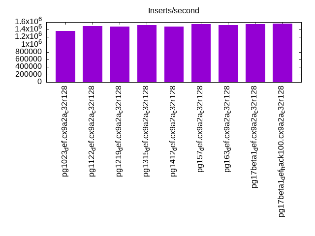
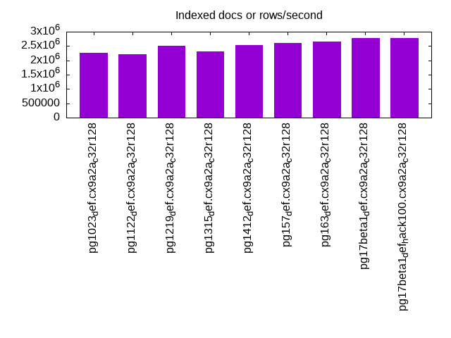
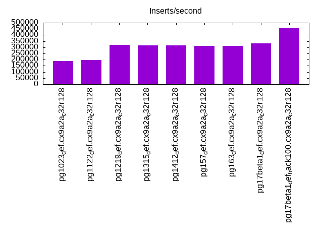
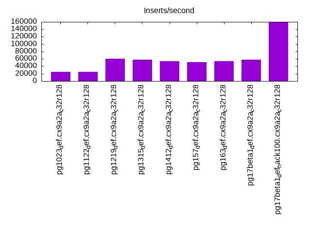
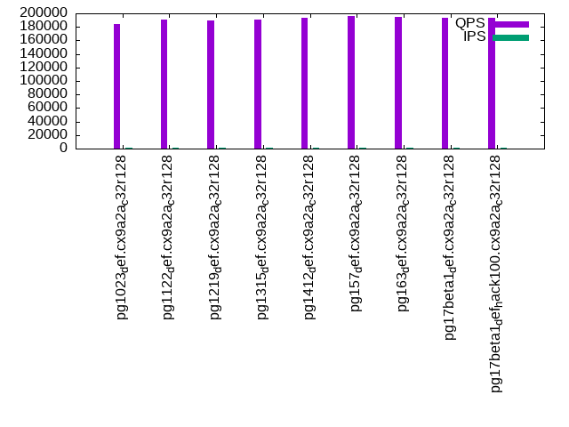
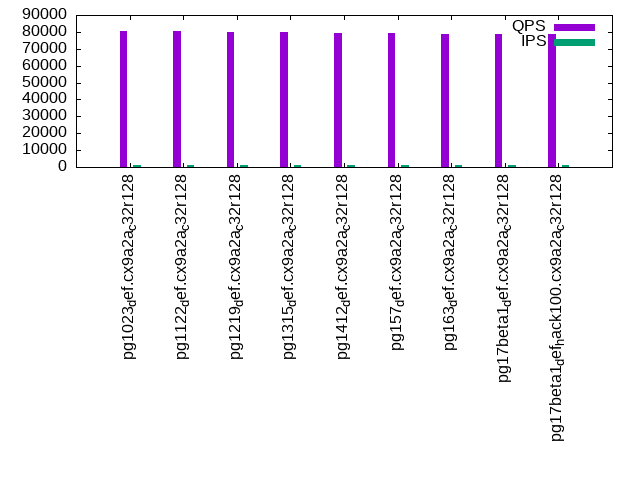
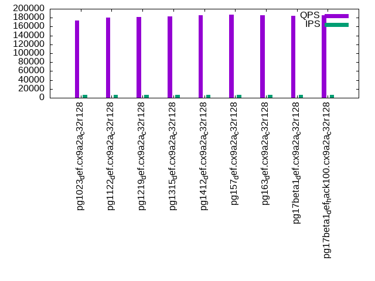
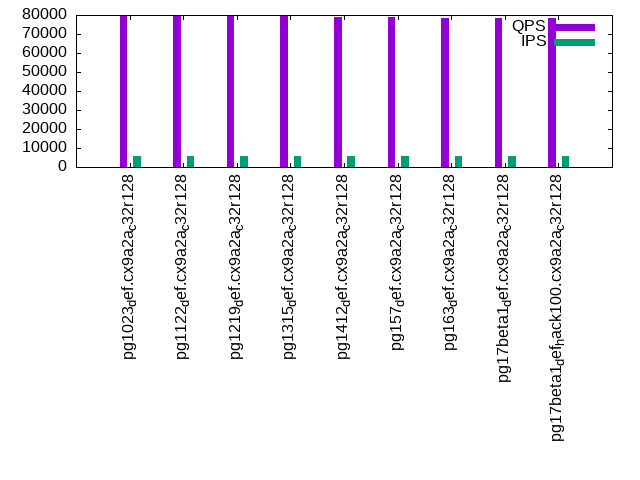
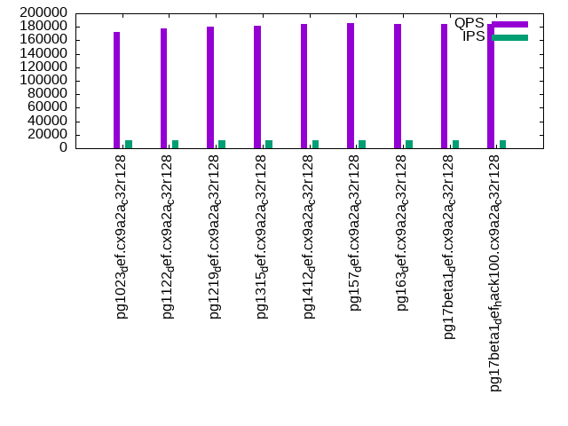
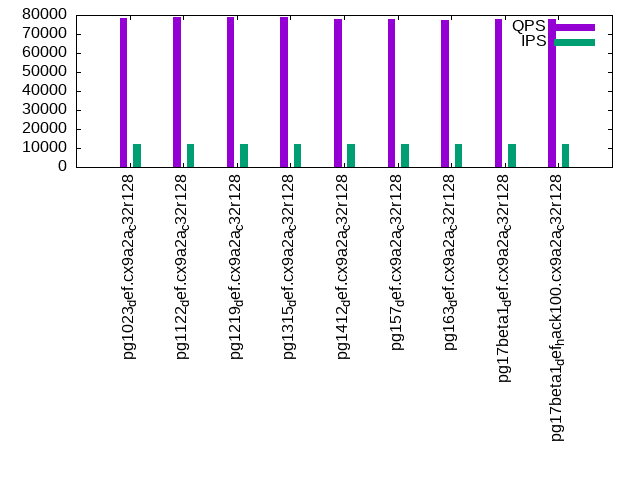

This is a report for the insert benchmark with 180M docs and 12 client(s). It is generated by scripts (bash, awk, sed) and Tufte might not be impressed. An overview of the insert benchmark is here and a short update is here. Below, by DBMS, I mean DBMS+version.config. An example is my8020.c10b40 where my means MySQL, 8020 is version 8.0.20 and c10b40 is the name for the configuration file.
The test server has 32 cores, 128 RAM and two NVMe SSD. It is described here as the (v7) Dell Precision 7865. The benchmark was run with 12 clients and there were 1 or 3 connections per client (1 for queries or inserts without rate limits, 1+1 for rate limited inserts+deletes). It uses 12 tables with a table per client. It loads 15M rows per table without secondary indexes, creates 3 secondary indexes per table, then inserts 40m+10m rows per table with a delete per insert to avoid growing the table. It then does 6 read+write tests for 1800s each that do queries as fast as possible with 100,100,500,500,1000,1000 inserts/s and the same for deletes/s per client concurrent with the queries. The database is cached in memory. Clients and the DBMS share one server. The per-database configs are in the per-database subdirectories here.
The tested DBMS are:
The numbers are inserts/s for l.i0, l.i1 and l.i2, indexed docs (or rows) /s for l.x and queries/s for qr100, qp100 thru qr1000, qp1000" The values are the average rate over the entire test for inserts (IPS) and queries (QPS). The range of values for IPS and QPS is split into 3 parts: bottom 25%, middle 50%, top 25%. Values in the bottom 25% have a red background, values in the top 25% have a green background and values in the middle have no color. A gray background is used for values that can be ignored because the DBMS did not sustain the target insert rate. Red backgrounds are not used when the minimum value is within 80% of the max value.
| dbms | l.i0 | l.x | l.i1 | l.i2 | qr100 | qp100 | qr500 | qp500 | qr1000 | qp1000 |
|---|---|---|---|---|---|---|---|---|---|---|
| pg1023_def.cx9a2a_c32r128 | 1363636 | 2250001 | 189125 | 24793 | 183852 | 80322 | 173781 | 79432 | 172455 | 78472 |
| pg1122_def.cx9a2a_c32r128 | 1500000 | 2222223 | 194726 | 25078 | 190558 | 80504 | 179984 | 79800 | 178042 | 79080 |
| pg1219_def.cx9a2a_c32r128 | 1475410 | 2500001 | 320213 | 60883 | 189652 | 80012 | 180973 | 79922 | 180352 | 79018 |
| pg1315_def.cx9a2a_c32r128 | 1525424 | 2307694 | 315997 | 58111 | 191001 | 79667 | 182699 | 79213 | 181066 | 78745 |
| pg1412_def.cx9a2a_c32r128 | 1487603 | 2535213 | 317250 | 53286 | 193838 | 79416 | 185938 | 79138 | 183745 | 77902 |
| pg157_def.cx9a2a_c32r128 | 1551724 | 2608697 | 309478 | 50633 | 196039 | 79270 | 186709 | 79195 | 185303 | 78020 |
| pg163_def.cx9a2a_c32r128 | 1525424 | 2647060 | 312094 | 53595 | 194332 | 78760 | 185890 | 78432 | 184687 | 77298 |
| pg17beta1_def.cx9a2a_c32r128 | 1551724 | 2769232 | 333797 | 57915 | 192790 | 78817 | 184437 | 78381 | 184280 | 77867 |
| pg17beta1_def_hack100.cx9a2a_c32r128 | 1565217 | 2769232 | 458453 | 159787 | 193874 | 78755 | 186094 | 78496 | 184590 | 77750 |
This table has relative throughput, throughput for the DBMS relative to the DBMS in the first line, using the absolute throughput from the previous table. Values less than 0.95 have a yellow background. Values greater than 1.05 have a blue background.
| dbms | l.i0 | l.x | l.i1 | l.i2 | qr100 | qp100 | qr500 | qp500 | qr1000 | qp1000 |
|---|---|---|---|---|---|---|---|---|---|---|
| pg1023_def.cx9a2a_c32r128 | 1.00 | 1.00 | 1.00 | 1.00 | 1.00 | 1.00 | 1.00 | 1.00 | 1.00 | 1.00 |
| pg1122_def.cx9a2a_c32r128 | 1.10 | 0.99 | 1.03 | 1.01 | 1.04 | 1.00 | 1.04 | 1.00 | 1.03 | 1.01 |
| pg1219_def.cx9a2a_c32r128 | 1.08 | 1.11 | 1.69 | 2.46 | 1.03 | 1.00 | 1.04 | 1.01 | 1.05 | 1.01 |
| pg1315_def.cx9a2a_c32r128 | 1.12 | 1.03 | 1.67 | 2.34 | 1.04 | 0.99 | 1.05 | 1.00 | 1.05 | 1.00 |
| pg1412_def.cx9a2a_c32r128 | 1.09 | 1.13 | 1.68 | 2.15 | 1.05 | 0.99 | 1.07 | 1.00 | 1.07 | 0.99 |
| pg157_def.cx9a2a_c32r128 | 1.14 | 1.16 | 1.64 | 2.04 | 1.07 | 0.99 | 1.07 | 1.00 | 1.07 | 0.99 |
| pg163_def.cx9a2a_c32r128 | 1.12 | 1.18 | 1.65 | 2.16 | 1.06 | 0.98 | 1.07 | 0.99 | 1.07 | 0.99 |
| pg17beta1_def.cx9a2a_c32r128 | 1.14 | 1.23 | 1.76 | 2.34 | 1.05 | 0.98 | 1.06 | 0.99 | 1.07 | 0.99 |
| pg17beta1_def_hack100.cx9a2a_c32r128 | 1.15 | 1.23 | 2.42 | 6.44 | 1.05 | 0.98 | 1.07 | 0.99 | 1.07 | 0.99 |
This lists the average rate of inserts/s for the tests that do inserts concurrent with queries. For such tests the query rate is listed in the table above. The read+write tests are setup so that the insert rate should match the target rate every second. Cells that are not at least 95% of the target have a red background to indicate a failure to satisfy the target.
| dbms | qr100.L1 | qp100.L2 | qr500.L3 | qp500.L4 | qr1000.L5 | qp1000.L6 |
|---|---|---|---|---|---|---|
| pg1023_def.cx9a2a_c32r128 | 1191 | 1191 | 5957 | 5957 | 11914 | 11914 |
| pg1122_def.cx9a2a_c32r128 | 1191 | 1191 | 5957 | 5957 | 11914 | 11914 |
| pg1219_def.cx9a2a_c32r128 | 1191 | 1191 | 5957 | 5957 | 11914 | 11914 |
| pg1315_def.cx9a2a_c32r128 | 1191 | 1191 | 5957 | 5957 | 11914 | 11914 |
| pg1412_def.cx9a2a_c32r128 | 1191 | 1191 | 5957 | 5957 | 11914 | 11914 |
| pg157_def.cx9a2a_c32r128 | 1191 | 1191 | 5957 | 5957 | 11914 | 11914 |
| pg163_def.cx9a2a_c32r128 | 1191 | 1191 | 5957 | 5957 | 11914 | 11914 |
| pg17beta1_def.cx9a2a_c32r128 | 1191 | 1191 | 5957 | 5957 | 11914 | 11914 |
| pg17beta1_def_hack100.cx9a2a_c32r128 | 1191 | 1192 | 5957 | 5957 | 11914 | 11914 |
| target | 1200 | 1200 | 6000 | 6000 | 12000 | 12000 |
l.i0: load without secondary indexes. Graphs for performance per 1-second interval are here.
Average throughput:
Insert response time histogram: each cell has the percentage of responses that take <= the time in the header and max is the max response time in seconds. For the max column values in the top 25% of the range have a red background and in the bottom 25% of the range have a green background. The red background is not used when the min value is within 80% of the max value.
| dbms | 256us | 1ms | 4ms | 16ms | 64ms | 256ms | 1s | 4s | 16s | gt | max |
|---|---|---|---|---|---|---|---|---|---|---|---|
| pg1023_def.cx9a2a_c32r128 | 99.053 | 0.857 | 0.069 | 0.021 | 0.042 | ||||||
| pg1122_def.cx9a2a_c32r128 | 98.863 | 1.069 | 0.051 | 0.017 | 0.052 | ||||||
| pg1219_def.cx9a2a_c32r128 | 98.705 | 1.236 | 0.043 | 0.017 | 0.036 | ||||||
| pg1315_def.cx9a2a_c32r128 | 98.545 | 1.392 | 0.040 | 0.024 | 0.042 | ||||||
| pg1412_def.cx9a2a_c32r128 | 98.971 | 1.029 | 0.004 | ||||||||
| pg157_def.cx9a2a_c32r128 | 98.918 | 1.082 | 0.004 | ||||||||
| pg163_def.cx9a2a_c32r128 | 98.950 | 1.050 | 0.004 | ||||||||
| pg17beta1_def.cx9a2a_c32r128 | 98.798 | 1.202 | 0.004 | ||||||||
| pg17beta1_def_hack100.cx9a2a_c32r128 | 98.893 | 1.106 | 0.001 | 0.007 |
Performance metrics for the DBMS listed above. Some are normalized by throughput, others are not. Legend for results is here.
ips qps rps rmbps wps wmbps rpq rkbpq wpi wkbpi csps cpups cspq cpupq dbgb1 dbgb2 rss maxop p50 p99 tag 1363636 0 0 0.0 5321.4 580.5 0.000 0.000 0.004 0.436 146747 50.2 0.108 12 17.2 46.5 1.7 0.042 135855 106084 pg1023_def.cx9a2a_c32r128 1500000 0 0 0.0 5794.3 634.2 0.000 0.000 0.004 0.433 158009 50.7 0.105 11 17.2 46.5 9.5 0.052 152438 128065 pg1122_def.cx9a2a_c32r128 1475410 0 0 0.0 5776.6 633.9 0.000 0.000 0.004 0.440 160576 51.0 0.109 11 17.2 46.5 0.3 0.036 150140 123368 pg1219_def.cx9a2a_c32r128 1525424 0 0 0.0 5958.8 654.8 0.000 0.000 0.004 0.440 167288 52.2 0.110 11 17.2 46.6 6.9 0.042 154336 119272 pg1315_def.cx9a2a_c32r128 1487603 0 0 0.0 5732.2 635.3 0.000 0.000 0.004 0.437 161140 51.7 0.108 11 17.2 46.6 2.0 0.004 149340 144946 pg1412_def.cx9a2a_c32r128 1551724 0 0 0.0 5991.2 663.2 0.000 0.000 0.004 0.438 167966 52.4 0.108 11 17.2 46.6 2.0 0.004 154736 150041 pg157_def.cx9a2a_c32r128 1525424 0 0 0.0 5939.0 656.9 0.000 0.000 0.004 0.441 166026 52.7 0.109 11 17.2 46.6 5.2 0.004 153036 148642 pg163_def.cx9a2a_c32r128 1551724 0 0 0.0 5984.8 661.3 0.000 0.000 0.004 0.436 166296 51.9 0.107 11 17.2 46.6 11.4 0.004 156533 150440 pg17beta1_def.cx9a2a_c32r128 1565217 0 0 0.0 6003.4 661.7 0.000 0.000 0.004 0.433 164984 51.6 0.105 11 17.2 46.6 11.4 0.007 158132 153335 pg17beta1_def_hack100.cx9a2a_c32r128
l.x: create secondary indexes.
Average throughput:
Performance metrics for the DBMS listed above. Some are normalized by throughput, others are not. Legend for results is here.
ips qps rps rmbps wps wmbps rpq rkbpq wpi wkbpi csps cpups cspq cpupq dbgb1 dbgb2 rss maxop p50 p99 tag 2250001 0 0 0.0 5823.0 690.0 0.000 0.000 0.003 0.314 46976 18.8 0.021 3 34.6 79.6 10.2 0.002 NA NA pg1023_def.cx9a2a_c32r128 2222223 0 0 0.0 5159.0 620.2 0.000 0.000 0.002 0.286 45892 19.1 0.021 3 34.6 79.6 10.1 0.029 NA NA pg1122_def.cx9a2a_c32r128 2500001 0 0 0.0 5771.0 692.7 0.000 0.000 0.002 0.284 43517 20.9 0.017 3 34.6 79.6 10.2 0.030 NA NA pg1219_def.cx9a2a_c32r128 2307694 0 0 0.0 5262.7 633.0 0.000 0.000 0.002 0.281 38393 19.8 0.017 3 34.6 79.7 10.2 0.002 NA NA pg1315_def.cx9a2a_c32r128 2535213 0 0 0.0 5995.9 719.9 0.000 0.000 0.002 0.291 32718 21.3 0.013 3 34.6 79.7 10.2 0.009 NA NA pg1412_def.cx9a2a_c32r128 2608697 0 0 0.0 6140.5 736.7 0.000 0.000 0.002 0.289 35147 20.7 0.013 3 34.6 79.7 10.4 0.027 NA NA pg157_def.cx9a2a_c32r128 2647060 0 0 0.0 6128.4 735.8 0.000 0.000 0.002 0.285 44732 20.8 0.017 3 34.6 79.7 10.4 0.024 NA NA pg163_def.cx9a2a_c32r128 2769232 0 0 0.0 7275.3 868.3 0.000 0.000 0.003 0.321 19920 20.7 0.007 2 34.6 79.6 9.1 0.002 NA NA pg17beta1_def.cx9a2a_c32r128 2769232 0 0 0.0 7203.2 859.7 0.000 0.000 0.003 0.318 20204 20.8 0.007 2 34.6 79.6 9.4 0.022 NA NA pg17beta1_def_hack100.cx9a2a_c32r128
l.i1: continue load after secondary indexes created with 50 inserts per transaction. Graphs for performance per 1-second interval are here.
Average throughput:
Insert response time histogram: each cell has the percentage of responses that take <= the time in the header and max is the max response time in seconds. For the max column values in the top 25% of the range have a red background and in the bottom 25% of the range have a green background. The red background is not used when the min value is within 80% of the max value.
| dbms | 256us | 1ms | 4ms | 16ms | 64ms | 256ms | 1s | 4s | 16s | gt | max |
|---|---|---|---|---|---|---|---|---|---|---|---|
| pg1023_def.cx9a2a_c32r128 | 8.506 | 90.808 | 0.387 | 0.295 | 0.004 | 0.148 | |||||
| pg1122_def.cx9a2a_c32r128 | 20.236 | 79.320 | 0.291 | 0.150 | 0.003 | 0.144 | |||||
| pg1219_def.cx9a2a_c32r128 | 5.680 | 93.558 | 0.535 | 0.226 | 0.001 | 0.181 | |||||
| pg1315_def.cx9a2a_c32r128 | 6.055 | 93.221 | 0.493 | 0.228 | 0.003 | 0.117 | |||||
| pg1412_def.cx9a2a_c32r128 | 6.303 | 93.070 | 0.386 | 0.240 | 0.001 | 0.111 | |||||
| pg157_def.cx9a2a_c32r128 | 4.604 | 94.778 | 0.410 | 0.208 | nonzero | 0.107 | |||||
| pg163_def.cx9a2a_c32r128 | 3.494 | 95.845 | 0.462 | 0.199 | nonzero | 0.117 | |||||
| pg17beta1_def.cx9a2a_c32r128 | 3.967 | 95.293 | 0.522 | 0.217 | nonzero | 0.089 | |||||
| pg17beta1_def_hack100.cx9a2a_c32r128 | 15.122 | 84.045 | 0.573 | 0.260 | nonzero | 0.095 |
Delete response time histogram: each cell has the percentage of responses that take <= the time in the header and max is the max response time in seconds. For the max column values in the top 25% of the range have a red background and in the bottom 25% of the range have a green background. The red background is not used when the min value is within 80% of the max value.
| dbms | 256us | 1ms | 4ms | 16ms | 64ms | 256ms | 1s | 4s | 16s | gt | max |
|---|---|---|---|---|---|---|---|---|---|---|---|
| pg1023_def.cx9a2a_c32r128 | 14.789 | 66.387 | 18.344 | 0.468 | 0.011 | 0.178 | |||||
| pg1122_def.cx9a2a_c32r128 | nonzero | 15.813 | 65.742 | 18.179 | 0.255 | 0.012 | 0.157 | ||||
| pg1219_def.cx9a2a_c32r128 | nonzero | 35.098 | 62.929 | 1.734 | 0.237 | 0.002 | 0.181 | ||||
| pg1315_def.cx9a2a_c32r128 | 35.176 | 62.503 | 2.099 | 0.219 | 0.003 | 0.116 | |||||
| pg1412_def.cx9a2a_c32r128 | 28.443 | 69.616 | 1.705 | 0.235 | 0.001 | 0.115 | |||||
| pg157_def.cx9a2a_c32r128 | 28.840 | 69.183 | 1.756 | 0.222 | nonzero | 0.106 | |||||
| pg163_def.cx9a2a_c32r128 | nonzero | 33.587 | 64.124 | 2.087 | 0.202 | nonzero | 0.116 | ||||
| pg17beta1_def.cx9a2a_c32r128 | 34.134 | 63.888 | 1.758 | 0.220 | nonzero | 0.088 | |||||
| pg17beta1_def_hack100.cx9a2a_c32r128 | 98.541 | 1.000 | 0.326 | 0.134 | nonzero | 0.094 |
Performance metrics for the DBMS listed above. Some are normalized by throughput, others are not. Legend for results is here.
ips qps rps rmbps wps wmbps rpq rkbpq wpi wkbpi csps cpups cspq cpupq dbgb1 dbgb2 rss maxop p50 p99 tag 189125 0 0 0.0 3839.6 382.6 0.000 0.000 0.020 2.072 89338 55.0 0.472 93 51.9 147.9 24.1 0.148 15683 3097 pg1023_def.cx9a2a_c32r128 194726 0 0 0.0 2875.9 281.3 0.000 0.000 0.015 1.479 90266 54.7 0.464 90 51.8 147.9 23.0 0.144 13835 2497 pg1122_def.cx9a2a_c32r128 320213 0 1 0.1 4782.1 469.1 0.000 0.000 0.015 1.500 150830 66.3 0.471 66 52.2 148.3 29.4 0.181 32465 2597 pg1219_def.cx9a2a_c32r128 315997 0 0 0.0 4591.2 450.2 0.000 0.000 0.015 1.459 149822 66.5 0.474 67 52.0 148.1 37.0 0.117 31166 2048 pg1315_def.cx9a2a_c32r128 317250 0 0 0.0 4569.4 448.0 0.000 0.000 0.014 1.446 147283 65.3 0.464 66 50.1 146.1 35.5 0.111 26921 3248 pg1412_def.cx9a2a_c32r128 309478 0 0 0.0 4459.7 436.9 0.000 0.000 0.014 1.446 144454 64.4 0.467 67 50.0 146.0 34.5 0.107 24623 3396 pg157_def.cx9a2a_c32r128 312094 0 0 0.0 4425.0 439.1 0.000 0.000 0.014 1.441 147180 64.7 0.472 66 49.8 145.8 45.0 0.117 27270 4145 pg163_def.cx9a2a_c32r128 333797 0 0 0.0 4768.0 471.0 0.000 0.000 0.014 1.445 150433 66.7 0.451 64 49.8 145.9 14.9 0.089 25822 3996 pg17beta1_def.cx9a2a_c32r128 458453 0 0 0.0 6647.9 660.7 0.000 0.000 0.015 1.476 247326 58.6 0.539 41 52.1 148.4 24.6 0.095 42704 3097 pg17beta1_def_hack100.cx9a2a_c32r128
l.i2: continue load after secondary indexes created with 5 inserts per transaction. Graphs for performance per 1-second interval are here.
Average throughput:
Insert response time histogram: each cell has the percentage of responses that take <= the time in the header and max is the max response time in seconds. For the max column values in the top 25% of the range have a red background and in the bottom 25% of the range have a green background. The red background is not used when the min value is within 80% of the max value.
| dbms | 256us | 1ms | 4ms | 16ms | 64ms | 256ms | 1s | 4s | 16s | gt | max |
|---|---|---|---|---|---|---|---|---|---|---|---|
| pg1023_def.cx9a2a_c32r128 | 93.021 | 6.970 | 0.003 | 0.006 | nonzero | nonzero | 0.116 | ||||
| pg1122_def.cx9a2a_c32r128 | 96.532 | 3.458 | 0.003 | 0.007 | nonzero | 0.110 | |||||
| pg1219_def.cx9a2a_c32r128 | 95.253 | 4.710 | 0.025 | 0.011 | nonzero | nonzero | 0.107 | ||||
| pg1315_def.cx9a2a_c32r128 | 94.762 | 5.203 | 0.020 | 0.016 | nonzero | nonzero | 0.070 | ||||
| pg1412_def.cx9a2a_c32r128 | 93.649 | 6.342 | 0.009 | nonzero | nonzero | nonzero | 0.089 | ||||
| pg157_def.cx9a2a_c32r128 | 92.628 | 7.364 | 0.008 | 0.001 | nonzero | nonzero | 0.064 | ||||
| pg163_def.cx9a2a_c32r128 | 88.568 | 11.420 | 0.012 | nonzero | nonzero | 0.076 | |||||
| pg17beta1_def.cx9a2a_c32r128 | 94.334 | 5.654 | 0.010 | 0.002 | nonzero | 0.083 | |||||
| pg17beta1_def_hack100.cx9a2a_c32r128 | 70.620 | 27.040 | 2.308 | 0.032 | 0.001 | nonzero | 0.108 |
Delete response time histogram: each cell has the percentage of responses that take <= the time in the header and max is the max response time in seconds. For the max column values in the top 25% of the range have a red background and in the bottom 25% of the range have a green background. The red background is not used when the min value is within 80% of the max value.
| dbms | 256us | 1ms | 4ms | 16ms | 64ms | 256ms | 1s | 4s | 16s | gt | max |
|---|---|---|---|---|---|---|---|---|---|---|---|
| pg1023_def.cx9a2a_c32r128 | 1.763 | 21.177 | 66.609 | 10.450 | nonzero | nonzero | 0.117 | ||||
| pg1122_def.cx9a2a_c32r128 | 1.975 | 22.070 | 65.036 | 10.919 | nonzero | nonzero | 0.111 | ||||
| pg1219_def.cx9a2a_c32r128 | 5.164 | 50.157 | 44.633 | 0.046 | nonzero | nonzero | 0.108 | ||||
| pg1315_def.cx9a2a_c32r128 | 4.887 | 49.241 | 45.802 | 0.070 | nonzero | nonzero | 0.070 | ||||
| pg1412_def.cx9a2a_c32r128 | 3.965 | 39.241 | 56.784 | 0.009 | nonzero | nonzero | 0.089 | ||||
| pg157_def.cx9a2a_c32r128 | 4.075 | 41.846 | 54.060 | 0.020 | nonzero | nonzero | 0.064 | ||||
| pg163_def.cx9a2a_c32r128 | 4.522 | 43.798 | 51.659 | 0.021 | nonzero | nonzero | 0.077 | ||||
| pg17beta1_def.cx9a2a_c32r128 | 4.551 | 47.104 | 48.338 | 0.007 | nonzero | 0.083 | |||||
| pg17beta1_def_hack100.cx9a2a_c32r128 | 24.855 | 72.544 | 2.568 | 0.033 | 0.001 | nonzero | 0.108 |
Performance metrics for the DBMS listed above. Some are normalized by throughput, others are not. Legend for results is here.
ips qps rps rmbps wps wmbps rpq rkbpq wpi wkbpi csps cpups cspq cpupq dbgb1 dbgb2 rss maxop p50 p99 tag 24793 0 0 0.0 481.0 47.8 0.000 0.000 0.019 1.974 119183 41.0 4.807 529 52.2 148.2 10.4 0.116 1523 724 pg1023_def.cx9a2a_c32r128 25078 0 0 0.0 372.9 37.1 0.000 0.000 0.015 1.515 120564 41.5 4.807 530 52.0 148.2 14.5 0.110 1763 1269 pg1122_def.cx9a2a_c32r128 60883 0 0 0.0 824.9 83.4 0.000 0.000 0.014 1.403 277813 51.6 4.563 271 52.4 148.5 17.6 0.107 4935 3366 pg1219_def.cx9a2a_c32r128 58111 0 0 0.0 764.9 78.1 0.000 0.000 0.013 1.376 266291 50.8 4.582 280 52.2 148.4 24.5 0.070 3701 2018 pg1315_def.cx9a2a_c32r128 53286 0 0 0.0 691.8 70.1 0.000 0.000 0.013 1.348 251725 48.9 4.724 294 50.3 146.3 18.6 0.089 3354 1754 pg1412_def.cx9a2a_c32r128 50633 0 0 0.0 661.2 67.1 0.000 0.000 0.013 1.357 239346 47.7 4.727 301 50.2 146.3 16.3 0.064 3097 1543 pg157_def.cx9a2a_c32r128 53595 0 0 0.0 704.6 71.5 0.000 0.000 0.013 1.367 251838 48.2 4.699 288 50.1 146.1 12.8 0.076 3381 1644 pg163_def.cx9a2a_c32r128 57915 0 0 0.0 757.2 76.4 0.000 0.000 0.013 1.350 244208 49.3 4.217 272 50.0 146.1 2.3 0.083 4475 2457 pg17beta1_def.cx9a2a_c32r128 159787 0 0 0.0 2157.9 216.6 0.000 0.000 0.014 1.388 579167 72.0 3.625 144 51.7 147.9 31.8 0.108 13880 7946 pg17beta1_def_hack100.cx9a2a_c32r128
qr100.L1: range queries with 100 insert/s per client. Graphs for performance per 1-second interval are here.
Average throughput:
Query response time histogram: each cell has the percentage of responses that take <= the time in the header and max is the max response time in seconds. For max values in the top 25% of the range have a red background and in the bottom 25% of the range have a green background. The red background is not used when the min value is within 80% of the max value.
| dbms | 256us | 1ms | 4ms | 16ms | 64ms | 256ms | 1s | 4s | 16s | gt | max |
|---|---|---|---|---|---|---|---|---|---|---|---|
| pg1023_def.cx9a2a_c32r128 | 99.998 | 0.002 | nonzero | 0.004 | |||||||
| pg1122_def.cx9a2a_c32r128 | 99.999 | 0.001 | nonzero | 0.003 | |||||||
| pg1219_def.cx9a2a_c32r128 | 99.997 | 0.003 | nonzero | 0.002 | |||||||
| pg1315_def.cx9a2a_c32r128 | 99.999 | 0.001 | nonzero | 0.003 | |||||||
| pg1412_def.cx9a2a_c32r128 | 99.999 | 0.001 | nonzero | nonzero | 0.010 | ||||||
| pg157_def.cx9a2a_c32r128 | 99.999 | 0.001 | nonzero | 0.002 | |||||||
| pg163_def.cx9a2a_c32r128 | 99.999 | 0.001 | nonzero | 0.002 | |||||||
| pg17beta1_def.cx9a2a_c32r128 | 99.999 | 0.001 | nonzero | nonzero | 0.005 | ||||||
| pg17beta1_def_hack100.cx9a2a_c32r128 | 99.999 | 0.001 | nonzero | nonzero | 0.005 |
Insert response time histogram: each cell has the percentage of responses that take <= the time in the header and max is the max response time in seconds. For max values in the top 25% of the range have a red background and in the bottom 25% of the range have a green background. The red background is not used when the min value is within 80% of the max value.
| dbms | 256us | 1ms | 4ms | 16ms | 64ms | 256ms | 1s | 4s | 16s | gt | max |
|---|---|---|---|---|---|---|---|---|---|---|---|
| pg1023_def.cx9a2a_c32r128 | 99.806 | 0.194 | 0.008 | ||||||||
| pg1122_def.cx9a2a_c32r128 | 0.005 | 99.836 | 0.160 | 0.007 | |||||||
| pg1219_def.cx9a2a_c32r128 | 0.035 | 99.817 | 0.148 | 0.007 | |||||||
| pg1315_def.cx9a2a_c32r128 | 0.093 | 99.755 | 0.153 | 0.007 | |||||||
| pg1412_def.cx9a2a_c32r128 | 0.127 | 99.727 | 0.146 | 0.007 | |||||||
| pg157_def.cx9a2a_c32r128 | 0.081 | 99.769 | 0.150 | 0.008 | |||||||
| pg163_def.cx9a2a_c32r128 | 0.312 | 99.549 | 0.139 | 0.008 | |||||||
| pg17beta1_def.cx9a2a_c32r128 | 0.472 | 99.417 | 0.111 | 0.007 | |||||||
| pg17beta1_def_hack100.cx9a2a_c32r128 | 0.514 | 99.368 | 0.118 | 0.007 |
Delete response time histogram: each cell has the percentage of responses that take <= the time in the header and max is the max response time in seconds. For max values in the top 25% of the range have a red background and in the bottom 25% of the range have a green background. The red background is not used when the min value is within 80% of the max value.
| dbms | 256us | 1ms | 4ms | 16ms | 64ms | 256ms | 1s | 4s | 16s | gt | max |
|---|---|---|---|---|---|---|---|---|---|---|---|
| pg1023_def.cx9a2a_c32r128 | 33.435 | 66.562 | 0.002 | 0.006 | |||||||
| pg1122_def.cx9a2a_c32r128 | 35.523 | 64.477 | 0.003 | ||||||||
| pg1219_def.cx9a2a_c32r128 | 66.174 | 33.826 | 0.003 | ||||||||
| pg1315_def.cx9a2a_c32r128 | 71.905 | 28.095 | 0.002 | ||||||||
| pg1412_def.cx9a2a_c32r128 | 71.581 | 28.419 | 0.002 | ||||||||
| pg157_def.cx9a2a_c32r128 | 70.572 | 29.428 | 0.003 | ||||||||
| pg163_def.cx9a2a_c32r128 | 76.718 | 23.282 | 0.002 | ||||||||
| pg17beta1_def.cx9a2a_c32r128 | 50.875 | 48.817 | 0.308 | 0.009 | |||||||
| pg17beta1_def_hack100.cx9a2a_c32r128 | 99.963 | 0.037 | 0.003 |
Performance metrics for the DBMS listed above. Some are normalized by throughput, others are not. Legend for results is here.
ips qps rps rmbps wps wmbps rpq rkbpq wpi wkbpi csps cpups cspq cpupq dbgb1 dbgb2 rss maxop p50 p99 tag 1191 183852 0 0.0 103.7 7.6 0.000 0.000 0.087 6.571 703765 37.6 3.828 65 52.1 148.2 53.3 0.004 15423 14341 pg1023_def.cx9a2a_c32r128 1191 190558 0 0.0 98.6 7.4 0.000 0.000 0.083 6.381 729927 37.9 3.830 64 52.0 148.1 53.2 0.003 16174 15024 pg1122_def.cx9a2a_c32r128 1191 189652 0 0.0 89.9 7.0 0.000 0.000 0.075 6.048 726289 37.9 3.830 64 52.4 148.5 53.5 0.002 15967 14805 pg1219_def.cx9a2a_c32r128 1191 191001 0 0.0 98.6 7.4 0.000 0.000 0.083 6.335 731454 38.0 3.830 64 52.2 148.3 53.3 0.003 16191 15056 pg1315_def.cx9a2a_c32r128 1191 193838 0 0.0 94.3 7.3 0.000 0.000 0.079 6.243 741664 38.0 3.826 63 50.3 146.3 51.3 0.010 16404 15247 pg1412_def.cx9a2a_c32r128 1191 196039 0 0.0 94.9 7.3 0.000 0.000 0.080 6.266 749710 38.0 3.824 62 50.2 146.3 0.5 0.002 16659 15421 pg157_def.cx9a2a_c32r128 1191 194332 0 0.0 94.0 7.3 0.000 0.000 0.079 6.267 744041 38.0 3.829 63 50.0 146.1 0.5 0.002 16286 15040 pg163_def.cx9a2a_c32r128 1191 192790 0 0.0 95.9 7.4 0.000 0.000 0.080 6.330 737938 38.0 3.828 63 50.0 146.1 6.4 0.005 16446 15300 pg17beta1_def.cx9a2a_c32r128 1191 193874 0 0.0 103.3 7.5 0.000 0.000 0.087 6.418 742067 38.0 3.828 63 51.7 147.8 6.6 0.005 16398 15200 pg17beta1_def_hack100.cx9a2a_c32r128
qp100.L2: point queries with 100 insert/s per client. Graphs for performance per 1-second interval are here.
Average throughput:
Query response time histogram: each cell has the percentage of responses that take <= the time in the header and max is the max response time in seconds. For max values in the top 25% of the range have a red background and in the bottom 25% of the range have a green background. The red background is not used when the min value is within 80% of the max value.
| dbms | 256us | 1ms | 4ms | 16ms | 64ms | 256ms | 1s | 4s | 16s | gt | max |
|---|---|---|---|---|---|---|---|---|---|---|---|
| pg1023_def.cx9a2a_c32r128 | 99.909 | 0.091 | nonzero | 0.003 | |||||||
| pg1122_def.cx9a2a_c32r128 | 99.921 | 0.078 | nonzero | 0.004 | |||||||
| pg1219_def.cx9a2a_c32r128 | 99.924 | 0.076 | nonzero | 0.002 | |||||||
| pg1315_def.cx9a2a_c32r128 | 99.924 | 0.076 | nonzero | 0.002 | |||||||
| pg1412_def.cx9a2a_c32r128 | 99.926 | 0.074 | nonzero | 0.002 | |||||||
| pg157_def.cx9a2a_c32r128 | 99.927 | 0.073 | nonzero | 0.002 | |||||||
| pg163_def.cx9a2a_c32r128 | 99.919 | 0.080 | 0.001 | 0.003 | |||||||
| pg17beta1_def.cx9a2a_c32r128 | 99.916 | 0.083 | 0.001 | 0.002 | |||||||
| pg17beta1_def_hack100.cx9a2a_c32r128 | 99.922 | 0.077 | 0.001 | 0.002 |
Insert response time histogram: each cell has the percentage of responses that take <= the time in the header and max is the max response time in seconds. For max values in the top 25% of the range have a red background and in the bottom 25% of the range have a green background. The red background is not used when the min value is within 80% of the max value.
| dbms | 256us | 1ms | 4ms | 16ms | 64ms | 256ms | 1s | 4s | 16s | gt | max |
|---|---|---|---|---|---|---|---|---|---|---|---|
| pg1023_def.cx9a2a_c32r128 | 99.817 | 0.183 | 0.008 | ||||||||
| pg1122_def.cx9a2a_c32r128 | 99.824 | 0.176 | 0.008 | ||||||||
| pg1219_def.cx9a2a_c32r128 | 99.850 | 0.150 | 0.007 | ||||||||
| pg1315_def.cx9a2a_c32r128 | 99.861 | 0.139 | 0.008 | ||||||||
| pg1412_def.cx9a2a_c32r128 | 99.877 | 0.123 | 0.007 | ||||||||
| pg157_def.cx9a2a_c32r128 | 0.005 | 99.866 | 0.130 | 0.007 | |||||||
| pg163_def.cx9a2a_c32r128 | 0.002 | 99.873 | 0.125 | 0.007 | |||||||
| pg17beta1_def.cx9a2a_c32r128 | 99.891 | 0.109 | 0.007 | ||||||||
| pg17beta1_def_hack100.cx9a2a_c32r128 | 0.002 | 99.868 | 0.130 | 0.015 |
Delete response time histogram: each cell has the percentage of responses that take <= the time in the header and max is the max response time in seconds. For max values in the top 25% of the range have a red background and in the bottom 25% of the range have a green background. The red background is not used when the min value is within 80% of the max value.
| dbms | 256us | 1ms | 4ms | 16ms | 64ms | 256ms | 1s | 4s | 16s | gt | max |
|---|---|---|---|---|---|---|---|---|---|---|---|
| pg1023_def.cx9a2a_c32r128 | 99.919 | 0.081 | 0.007 | ||||||||
| pg1122_def.cx9a2a_c32r128 | 99.954 | 0.046 | 0.008 | ||||||||
| pg1219_def.cx9a2a_c32r128 | 4.986 | 94.984 | 0.030 | 0.009 | |||||||
| pg1315_def.cx9a2a_c32r128 | 3.535 | 96.438 | 0.028 | 0.009 | |||||||
| pg1412_def.cx9a2a_c32r128 | 11.611 | 88.359 | 0.030 | 0.007 | |||||||
| pg157_def.cx9a2a_c32r128 | 9.769 | 90.204 | 0.028 | 0.007 | |||||||
| pg163_def.cx9a2a_c32r128 | 4.574 | 95.398 | 0.028 | 0.007 | |||||||
| pg17beta1_def.cx9a2a_c32r128 | 6.248 | 93.100 | 0.653 | 0.013 | |||||||
| pg17beta1_def_hack100.cx9a2a_c32r128 | 99.824 | 0.176 | 0.004 |
Performance metrics for the DBMS listed above. Some are normalized by throughput, others are not. Legend for results is here.
ips qps rps rmbps wps wmbps rpq rkbpq wpi wkbpi csps cpups cspq cpupq dbgb1 dbgb2 rss maxop p50 p99 tag 1191 80322 0 0.0 334.4 13.8 0.000 0.000 0.281 11.902 324992 39.5 4.046 157 52.1 148.2 53.3 0.003 6761 6633 pg1023_def.cx9a2a_c32r128 1191 80504 0 0.0 332.9 13.9 0.000 0.000 0.279 11.945 330933 39.9 4.111 159 52.0 144.6 53.2 0.004 6809 6681 pg1122_def.cx9a2a_c32r128 1191 80012 0 0.0 339.4 14.1 0.000 0.000 0.285 12.136 329169 39.9 4.114 160 52.4 144.6 53.5 0.002 6731 6601 pg1219_def.cx9a2a_c32r128 1191 79667 0 0.0 338.8 14.0 0.000 0.000 0.284 11.995 328884 39.9 4.128 160 52.2 148.3 53.3 0.002 6681 6553 pg1315_def.cx9a2a_c32r128 1191 79416 0 0.0 330.6 13.9 0.000 0.000 0.277 11.970 330068 39.9 4.156 161 50.3 140.4 51.3 0.002 6649 6504 pg1412_def.cx9a2a_c32r128 1191 79270 0 0.0 329.6 13.9 0.000 0.000 0.277 11.954 323088 39.9 4.076 161 50.2 140.6 0.5 0.002 6697 6553 pg157_def.cx9a2a_c32r128 1191 78760 0 0.0 329.0 13.9 0.000 0.000 0.276 11.947 321578 40.5 4.083 165 50.0 140.4 0.7 0.003 6617 6473 pg163_def.cx9a2a_c32r128 1191 78817 0 0.0 328.0 13.9 0.000 0.000 0.275 11.974 322623 40.5 4.093 164 50.0 140.2 6.2 0.002 6617 6489 pg17beta1_def.cx9a2a_c32r128 1192 78755 0 0.0 348.7 14.0 0.000 0.000 0.293 12.065 323712 40.5 4.110 165 51.7 147.8 6.3 0.002 6587 6473 pg17beta1_def_hack100.cx9a2a_c32r128
qr500.L3: range queries with 500 insert/s per client. Graphs for performance per 1-second interval are here.
Average throughput:
Query response time histogram: each cell has the percentage of responses that take <= the time in the header and max is the max response time in seconds. For max values in the top 25% of the range have a red background and in the bottom 25% of the range have a green background. The red background is not used when the min value is within 80% of the max value.
| dbms | 256us | 1ms | 4ms | 16ms | 64ms | 256ms | 1s | 4s | 16s | gt | max |
|---|---|---|---|---|---|---|---|---|---|---|---|
| pg1023_def.cx9a2a_c32r128 | 99.984 | 0.013 | 0.002 | 0.001 | nonzero | nonzero | 0.111 | ||||
| pg1122_def.cx9a2a_c32r128 | 99.984 | 0.014 | 0.001 | 0.001 | nonzero | nonzero | 0.110 | ||||
| pg1219_def.cx9a2a_c32r128 | 99.984 | 0.014 | 0.001 | 0.001 | nonzero | nonzero | 0.161 | ||||
| pg1315_def.cx9a2a_c32r128 | 99.980 | 0.016 | 0.002 | 0.001 | nonzero | 0.037 | |||||
| pg1412_def.cx9a2a_c32r128 | 99.982 | 0.015 | 0.002 | 0.001 | nonzero | nonzero | 0.072 | ||||
| pg157_def.cx9a2a_c32r128 | 99.984 | 0.014 | 0.001 | 0.001 | nonzero | nonzero | 0.074 | ||||
| pg163_def.cx9a2a_c32r128 | 99.984 | 0.014 | 0.001 | 0.001 | nonzero | nonzero | 0.085 | ||||
| pg17beta1_def.cx9a2a_c32r128 | 99.985 | 0.013 | 0.001 | 0.001 | nonzero | nonzero | 0.072 | ||||
| pg17beta1_def_hack100.cx9a2a_c32r128 | 99.988 | 0.011 | 0.001 | 0.001 | nonzero | 0.034 |
Insert response time histogram: each cell has the percentage of responses that take <= the time in the header and max is the max response time in seconds. For max values in the top 25% of the range have a red background and in the bottom 25% of the range have a green background. The red background is not used when the min value is within 80% of the max value.
| dbms | 256us | 1ms | 4ms | 16ms | 64ms | 256ms | 1s | 4s | 16s | gt | max |
|---|---|---|---|---|---|---|---|---|---|---|---|
| pg1023_def.cx9a2a_c32r128 | 1.374 | 96.051 | 2.229 | 0.346 | 0.054 | ||||||
| pg1122_def.cx9a2a_c32r128 | 5.455 | 92.384 | 1.806 | 0.354 | 0.045 | ||||||
| pg1219_def.cx9a2a_c32r128 | 6.484 | 91.669 | 1.592 | 0.255 | 0.034 | ||||||
| pg1315_def.cx9a2a_c32r128 | 4.376 | 92.779 | 2.290 | 0.555 | 0.043 | ||||||
| pg1412_def.cx9a2a_c32r128 | 6.594 | 90.858 | 2.140 | 0.408 | 0.031 | ||||||
| pg157_def.cx9a2a_c32r128 | 8.222 | 89.400 | 2.099 | 0.279 | 0.042 | ||||||
| pg163_def.cx9a2a_c32r128 | 9.045 | 88.650 | 2.021 | 0.284 | nonzero | 0.065 | |||||
| pg17beta1_def.cx9a2a_c32r128 | 10.113 | 87.428 | 2.162 | 0.298 | 0.029 | ||||||
| pg17beta1_def_hack100.cx9a2a_c32r128 | 15.934 | 81.976 | 1.787 | 0.303 | 0.036 |
Delete response time histogram: each cell has the percentage of responses that take <= the time in the header and max is the max response time in seconds. For max values in the top 25% of the range have a red background and in the bottom 25% of the range have a green background. The red background is not used when the min value is within 80% of the max value.
| dbms | 256us | 1ms | 4ms | 16ms | 64ms | 256ms | 1s | 4s | 16s | gt | max |
|---|---|---|---|---|---|---|---|---|---|---|---|
| pg1023_def.cx9a2a_c32r128 | 8.197 | 77.836 | 13.627 | 0.340 | 0.053 | ||||||
| pg1122_def.cx9a2a_c32r128 | 9.115 | 79.561 | 11.025 | 0.300 | 0.045 | ||||||
| pg1219_def.cx9a2a_c32r128 | 41.279 | 57.082 | 1.450 | 0.188 | 0.033 | ||||||
| pg1315_def.cx9a2a_c32r128 | 35.689 | 61.499 | 2.399 | 0.414 | 0.041 | ||||||
| pg1412_def.cx9a2a_c32r128 | 33.956 | 63.663 | 2.101 | 0.279 | 0.027 | ||||||
| pg157_def.cx9a2a_c32r128 | 32.983 | 64.760 | 2.040 | 0.218 | 0.040 | ||||||
| pg163_def.cx9a2a_c32r128 | 38.590 | 59.426 | 1.805 | 0.179 | 0.064 | ||||||
| pg17beta1_def.cx9a2a_c32r128 | 36.137 | 60.875 | 2.777 | 0.211 | 0.028 | ||||||
| pg17beta1_def_hack100.cx9a2a_c32r128 | 98.919 | 0.628 | 0.394 | 0.058 | 0.034 |
Performance metrics for the DBMS listed above. Some are normalized by throughput, others are not. Legend for results is here.
ips qps rps rmbps wps wmbps rpq rkbpq wpi wkbpi csps cpups cspq cpupq dbgb1 dbgb2 rss maxop p50 p99 tag 5957 173781 0 0.0 447.0 21.4 0.000 0.000 0.075 3.673 663213 39.0 3.816 72 52.1 148.2 26.0 0.111 14304 13154 pg1023_def.cx9a2a_c32r128 5957 179984 0 0.0 440.4 20.6 0.000 0.000 0.074 3.536 687775 39.1 3.821 70 52.1 137.4 38.5 0.110 15184 13903 pg1122_def.cx9a2a_c32r128 5957 180973 0 0.0 452.2 20.5 0.000 0.000 0.076 3.516 693535 38.8 3.832 69 52.4 137.3 42.5 0.161 15152 13889 pg1219_def.cx9a2a_c32r128 5957 182699 0 0.0 447.6 20.6 0.000 0.000 0.075 3.540 698625 38.7 3.824 68 52.2 143.7 40.3 0.037 15119 13870 pg1315_def.cx9a2a_c32r128 5957 185938 0 0.0 441.3 20.4 0.000 0.000 0.074 3.510 711395 38.6 3.826 66 50.3 133.5 21.6 0.072 15791 14560 pg1412_def.cx9a2a_c32r128 5957 186709 0 0.0 440.1 20.4 0.000 0.000 0.074 3.511 714412 38.7 3.826 66 50.2 133.5 35.0 0.074 15749 14432 pg157_def.cx9a2a_c32r128 5957 185890 0 0.0 439.0 20.4 0.000 0.000 0.074 3.514 711571 38.7 3.828 67 50.1 133.4 45.1 0.085 15615 14304 pg163_def.cx9a2a_c32r128 5957 184437 0 0.0 440.4 20.8 0.000 0.000 0.074 3.575 705141 38.6 3.823 67 50.1 133.3 5.4 0.072 15524 14273 pg17beta1_def.cx9a2a_c32r128 5957 186094 0 0.0 458.2 21.0 0.000 0.000 0.077 3.614 713088 38.4 3.832 66 51.8 146.2 11.1 0.034 15701 14506 pg17beta1_def_hack100.cx9a2a_c32r128
qp500.L4: point queries with 500 insert/s per client. Graphs for performance per 1-second interval are here.
Average throughput:
Query response time histogram: each cell has the percentage of responses that take <= the time in the header and max is the max response time in seconds. For max values in the top 25% of the range have a red background and in the bottom 25% of the range have a green background. The red background is not used when the min value is within 80% of the max value.
| dbms | 256us | 1ms | 4ms | 16ms | 64ms | 256ms | 1s | 4s | 16s | gt | max |
|---|---|---|---|---|---|---|---|---|---|---|---|
| pg1023_def.cx9a2a_c32r128 | 99.754 | 0.241 | 0.006 | nonzero | nonzero | nonzero | 0.128 | ||||
| pg1122_def.cx9a2a_c32r128 | 99.745 | 0.248 | 0.006 | nonzero | nonzero | 0.021 | |||||
| pg1219_def.cx9a2a_c32r128 | 99.770 | 0.223 | 0.007 | nonzero | nonzero | nonzero | 0.163 | ||||
| pg1315_def.cx9a2a_c32r128 | 99.814 | 0.183 | 0.003 | nonzero | nonzero | 0.018 | |||||
| pg1412_def.cx9a2a_c32r128 | 99.821 | 0.176 | 0.003 | nonzero | nonzero | nonzero | 0.081 | ||||
| pg157_def.cx9a2a_c32r128 | 99.816 | 0.180 | 0.004 | nonzero | nonzero | nonzero | 0.081 | ||||
| pg163_def.cx9a2a_c32r128 | 99.786 | 0.208 | 0.006 | nonzero | nonzero | 0.018 | |||||
| pg17beta1_def.cx9a2a_c32r128 | 99.844 | 0.154 | 0.002 | nonzero | nonzero | 0.025 | |||||
| pg17beta1_def_hack100.cx9a2a_c32r128 | 99.867 | 0.130 | 0.003 | nonzero | nonzero | nonzero | 0.111 |
Insert response time histogram: each cell has the percentage of responses that take <= the time in the header and max is the max response time in seconds. For max values in the top 25% of the range have a red background and in the bottom 25% of the range have a green background. The red background is not used when the min value is within 80% of the max value.
| dbms | 256us | 1ms | 4ms | 16ms | 64ms | 256ms | 1s | 4s | 16s | gt | max |
|---|---|---|---|---|---|---|---|---|---|---|---|
| pg1023_def.cx9a2a_c32r128 | 0.224 | 98.003 | 1.397 | 0.376 | 0.039 | ||||||
| pg1122_def.cx9a2a_c32r128 | 0.188 | 97.829 | 1.516 | 0.468 | 0.046 | ||||||
| pg1219_def.cx9a2a_c32r128 | 1.138 | 96.810 | 1.694 | 0.358 | 0.037 | ||||||
| pg1315_def.cx9a2a_c32r128 | 1.938 | 96.475 | 1.313 | 0.273 | 0.028 | ||||||
| pg1412_def.cx9a2a_c32r128 | 2.384 | 96.094 | 1.224 | 0.297 | 0.031 | ||||||
| pg157_def.cx9a2a_c32r128 | 3.225 | 95.163 | 1.312 | 0.300 | 0.028 | ||||||
| pg163_def.cx9a2a_c32r128 | 2.133 | 96.078 | 1.427 | 0.362 | 0.030 | ||||||
| pg17beta1_def.cx9a2a_c32r128 | 5.317 | 93.784 | 0.787 | 0.113 | 0.028 | ||||||
| pg17beta1_def_hack100.cx9a2a_c32r128 | 4.311 | 94.204 | 1.263 | 0.222 | 0.025 |
Delete response time histogram: each cell has the percentage of responses that take <= the time in the header and max is the max response time in seconds. For max values in the top 25% of the range have a red background and in the bottom 25% of the range have a green background. The red background is not used when the min value is within 80% of the max value.
| dbms | 256us | 1ms | 4ms | 16ms | 64ms | 256ms | 1s | 4s | 16s | gt | max |
|---|---|---|---|---|---|---|---|---|---|---|---|
| pg1023_def.cx9a2a_c32r128 | 8.025 | 69.664 | 21.904 | 0.407 | 0.028 | ||||||
| pg1122_def.cx9a2a_c32r128 | 7.850 | 65.386 | 26.251 | 0.513 | 0.042 | ||||||
| pg1219_def.cx9a2a_c32r128 | 31.879 | 64.268 | 3.566 | 0.287 | 0.030 | ||||||
| pg1315_def.cx9a2a_c32r128 | 34.811 | 62.530 | 2.413 | 0.246 | 0.028 | ||||||
| pg1412_def.cx9a2a_c32r128 | 30.454 | 66.544 | 2.723 | 0.280 | 0.030 | ||||||
| pg157_def.cx9a2a_c32r128 | 31.752 | 64.531 | 3.419 | 0.297 | 0.028 | ||||||
| pg163_def.cx9a2a_c32r128 | 31.867 | 64.353 | 3.456 | 0.324 | 0.029 | ||||||
| pg17beta1_def.cx9a2a_c32r128 | 35.222 | 62.092 | 2.552 | 0.134 | 0.029 | ||||||
| pg17beta1_def_hack100.cx9a2a_c32r128 | 99.003 | 0.658 | 0.310 | 0.029 | 0.022 |
Performance metrics for the DBMS listed above. Some are normalized by throughput, others are not. Legend for results is here.
ips qps rps rmbps wps wmbps rpq rkbpq wpi wkbpi csps cpups cspq cpupq dbgb1 dbgb2 rss maxop p50 p99 tag 5957 79432 0 0.0 271.1 22.4 0.000 0.000 0.046 3.847 321939 40.9 4.053 165 52.0 148.1 19.2 0.128 6681 6521 pg1023_def.cx9a2a_c32r128 5957 79800 0 0.0 272.5 22.4 0.000 0.000 0.046 3.853 324503 41.3 4.066 166 52.1 132.3 9.2 0.021 6713 6521 pg1122_def.cx9a2a_c32r128 5957 79922 0 0.0 274.6 22.7 0.000 0.000 0.046 3.899 325253 41.0 4.070 164 52.3 132.2 36.5 0.163 6777 6587 pg1219_def.cx9a2a_c32r128 5957 79213 0 0.0 272.5 22.5 0.000 0.000 0.046 3.867 324932 40.8 4.102 165 52.3 138.0 37.7 0.018 6633 6475 pg1315_def.cx9a2a_c32r128 5957 79138 0 0.0 270.2 22.3 0.000 0.000 0.045 3.828 325526 40.8 4.113 165 50.4 128.6 3.7 0.081 6665 6489 pg1412_def.cx9a2a_c32r128 5957 79195 0 0.0 270.4 22.3 0.000 0.000 0.045 3.827 320191 40.8 4.043 165 50.3 128.7 11.0 0.081 6681 6489 pg157_def.cx9a2a_c32r128 5957 78432 0 0.0 270.9 22.3 0.000 0.000 0.045 3.833 317912 41.0 4.053 167 50.2 128.7 23.1 0.018 6603 6396 pg163_def.cx9a2a_c32r128 5957 78381 0 0.0 270.8 22.2 0.000 0.000 0.045 3.815 320041 41.1 4.083 168 50.2 128.5 6.3 0.025 6617 6411 pg17beta1_def.cx9a2a_c32r128 5957 78496 0 0.0 281.7 23.1 0.000 0.000 0.047 3.970 321749 40.7 4.099 166 51.7 140.1 21.1 0.111 6569 6409 pg17beta1_def_hack100.cx9a2a_c32r128
qr1000.L5: range queries with 1000 insert/s per client. Graphs for performance per 1-second interval are here.
Average throughput:
Query response time histogram: each cell has the percentage of responses that take <= the time in the header and max is the max response time in seconds. For max values in the top 25% of the range have a red background and in the bottom 25% of the range have a green background. The red background is not used when the min value is within 80% of the max value.
| dbms | 256us | 1ms | 4ms | 16ms | 64ms | 256ms | 1s | 4s | 16s | gt | max |
|---|---|---|---|---|---|---|---|---|---|---|---|
| pg1023_def.cx9a2a_c32r128 | 99.960 | 0.035 | 0.004 | 0.001 | nonzero | nonzero | 0.118 | ||||
| pg1122_def.cx9a2a_c32r128 | 99.951 | 0.045 | 0.004 | 0.001 | nonzero | nonzero | 0.125 | ||||
| pg1219_def.cx9a2a_c32r128 | 99.954 | 0.042 | 0.004 | 0.001 | nonzero | nonzero | 0.175 | ||||
| pg1315_def.cx9a2a_c32r128 | 99.954 | 0.042 | 0.003 | 0.001 | nonzero | nonzero | 0.103 | ||||
| pg1412_def.cx9a2a_c32r128 | 99.945 | 0.049 | 0.005 | 0.001 | nonzero | nonzero | 0.079 | ||||
| pg157_def.cx9a2a_c32r128 | 99.957 | 0.039 | 0.003 | 0.001 | nonzero | nonzero | 0.084 | ||||
| pg163_def.cx9a2a_c32r128 | 99.956 | 0.040 | 0.003 | 0.001 | nonzero | nonzero | 0.076 | ||||
| pg17beta1_def.cx9a2a_c32r128 | 99.965 | 0.032 | 0.002 | 0.001 | nonzero | nonzero | 0.072 | ||||
| pg17beta1_def_hack100.cx9a2a_c32r128 | 99.960 | 0.038 | 0.002 | 0.001 | nonzero | nonzero | 0.104 |
Insert response time histogram: each cell has the percentage of responses that take <= the time in the header and max is the max response time in seconds. For max values in the top 25% of the range have a red background and in the bottom 25% of the range have a green background. The red background is not used when the min value is within 80% of the max value.
| dbms | 256us | 1ms | 4ms | 16ms | 64ms | 256ms | 1s | 4s | 16s | gt | max |
|---|---|---|---|---|---|---|---|---|---|---|---|
| pg1023_def.cx9a2a_c32r128 | 1.383 | 96.802 | 1.512 | 0.303 | 0.044 | ||||||
| pg1122_def.cx9a2a_c32r128 | 4.668 | 93.595 | 1.427 | 0.309 | nonzero | 0.104 | |||||
| pg1219_def.cx9a2a_c32r128 | 6.474 | 91.613 | 1.675 | 0.238 | 0.049 | ||||||
| pg1315_def.cx9a2a_c32r128 | 7.172 | 90.873 | 1.716 | 0.239 | 0.048 | ||||||
| pg1412_def.cx9a2a_c32r128 | 6.641 | 91.406 | 1.684 | 0.269 | nonzero | 0.067 | |||||
| pg157_def.cx9a2a_c32r128 | 8.166 | 89.961 | 1.627 | 0.246 | nonzero | 0.077 | |||||
| pg163_def.cx9a2a_c32r128 | 8.992 | 89.083 | 1.669 | 0.256 | 0.040 | ||||||
| pg17beta1_def.cx9a2a_c32r128 | 12.087 | 86.579 | 1.095 | 0.239 | 0.035 | ||||||
| pg17beta1_def_hack100.cx9a2a_c32r128 | 12.316 | 86.264 | 1.159 | 0.262 | 0.029 |
Delete response time histogram: each cell has the percentage of responses that take <= the time in the header and max is the max response time in seconds. For max values in the top 25% of the range have a red background and in the bottom 25% of the range have a green background. The red background is not used when the min value is within 80% of the max value.
| dbms | 256us | 1ms | 4ms | 16ms | 64ms | 256ms | 1s | 4s | 16s | gt | max |
|---|---|---|---|---|---|---|---|---|---|---|---|
| pg1023_def.cx9a2a_c32r128 | 11.995 | 75.310 | 12.390 | 0.304 | 0.047 | ||||||
| pg1122_def.cx9a2a_c32r128 | 12.165 | 76.489 | 11.038 | 0.308 | nonzero | 0.103 | |||||
| pg1219_def.cx9a2a_c32r128 | 43.940 | 53.636 | 2.221 | 0.204 | 0.048 | ||||||
| pg1315_def.cx9a2a_c32r128 | 44.936 | 52.506 | 2.373 | 0.186 | 0.048 | ||||||
| pg1412_def.cx9a2a_c32r128 | 38.012 | 59.052 | 2.706 | 0.231 | nonzero | 0.066 | |||||
| pg157_def.cx9a2a_c32r128 | nonzero | 38.112 | 58.612 | 3.045 | 0.231 | nonzero | 0.076 | ||||
| pg163_def.cx9a2a_c32r128 | 42.713 | 54.331 | 2.736 | 0.220 | 0.035 | ||||||
| pg17beta1_def.cx9a2a_c32r128 | 44.817 | 53.279 | 1.742 | 0.163 | 0.030 | ||||||
| pg17beta1_def_hack100.cx9a2a_c32r128 | nonzero | 95.918 | 3.660 | 0.365 | 0.056 | 0.028 |
Performance metrics for the DBMS listed above. Some are normalized by throughput, others are not. Legend for results is here.
ips qps rps rmbps wps wmbps rpq rkbpq wpi wkbpi csps cpups cspq cpupq dbgb1 dbgb2 rss maxop p50 p99 tag 11914 172455 0 0.0 342.2 29.5 0.000 0.000 0.029 2.534 655974 40.6 3.804 75 52.0 147.3 22.2 0.118 14449 12658 pg1023_def.cx9a2a_c32r128 11914 178042 0 0.0 340.0 29.2 0.000 0.000 0.029 2.512 679052 40.7 3.814 73 51.8 127.6 21.8 0.125 14736 12962 pg1122_def.cx9a2a_c32r128 11914 180352 0 0.0 348.4 29.9 0.000 0.000 0.029 2.574 689433 40.0 3.823 71 52.1 127.5 23.8 0.175 15152 13585 pg1219_def.cx9a2a_c32r128 11914 181066 0 0.0 340.9 29.4 0.000 0.000 0.029 2.529 692210 39.9 3.823 71 51.8 132.5 10.7 0.103 15332 13713 pg1315_def.cx9a2a_c32r128 11914 183745 0 0.0 340.3 29.3 0.000 0.000 0.029 2.516 702331 39.8 3.822 69 50.5 124.5 8.4 0.079 15375 13633 pg1412_def.cx9a2a_c32r128 11914 185303 0 0.0 339.1 29.2 0.000 0.000 0.028 2.509 707507 39.8 3.818 69 50.4 124.4 20.7 0.084 15599 13809 pg157_def.cx9a2a_c32r128 11914 184687 0 0.0 338.3 29.2 0.000 0.000 0.028 2.509 705538 39.8 3.820 69 50.3 124.4 30.0 0.076 15525 13873 pg163_def.cx9a2a_c32r128 11914 184280 0 0.0 328.2 28.2 0.000 0.000 0.028 2.424 703617 39.7 3.818 69 50.3 124.3 6.6 0.072 15535 14305 pg17beta1_def.cx9a2a_c32r128 11914 184590 0 0.0 333.3 28.2 0.000 0.000 0.028 2.427 707339 39.1 3.832 68 51.7 134.8 34.4 0.104 15439 13831 pg17beta1_def_hack100.cx9a2a_c32r128
qp1000.L6: point queries with 1000 insert/s per client. Graphs for performance per 1-second interval are here.
Average throughput:
Query response time histogram: each cell has the percentage of responses that take <= the time in the header and max is the max response time in seconds. For max values in the top 25% of the range have a red background and in the bottom 25% of the range have a green background. The red background is not used when the min value is within 80% of the max value.
| dbms | 256us | 1ms | 4ms | 16ms | 64ms | 256ms | 1s | 4s | 16s | gt | max |
|---|---|---|---|---|---|---|---|---|---|---|---|
| pg1023_def.cx9a2a_c32r128 | 99.622 | 0.372 | 0.006 | nonzero | nonzero | nonzero | 0.122 | ||||
| pg1122_def.cx9a2a_c32r128 | 99.621 | 0.373 | 0.005 | nonzero | nonzero | 0.017 | |||||
| pg1219_def.cx9a2a_c32r128 | 99.638 | 0.353 | 0.009 | nonzero | nonzero | nonzero | 0.136 | ||||
| pg1315_def.cx9a2a_c32r128 | 99.643 | 0.349 | 0.008 | nonzero | nonzero | nonzero | 0.102 | ||||
| pg1412_def.cx9a2a_c32r128 | 99.655 | 0.338 | 0.007 | nonzero | nonzero | nonzero | 0.087 | ||||
| pg157_def.cx9a2a_c32r128 | 99.648 | 0.345 | 0.007 | nonzero | nonzero | nonzero | 0.090 | ||||
| pg163_def.cx9a2a_c32r128 | 99.646 | 0.345 | 0.008 | nonzero | nonzero | nonzero | 0.084 | ||||
| pg17beta1_def.cx9a2a_c32r128 | 99.642 | 0.349 | 0.008 | nonzero | nonzero | nonzero | 0.091 | ||||
| pg17beta1_def_hack100.cx9a2a_c32r128 | 99.692 | 0.302 | 0.006 | nonzero | nonzero | 0.020 |
Insert response time histogram: each cell has the percentage of responses that take <= the time in the header and max is the max response time in seconds. For max values in the top 25% of the range have a red background and in the bottom 25% of the range have a green background. The red background is not used when the min value is within 80% of the max value.
| dbms | 256us | 1ms | 4ms | 16ms | 64ms | 256ms | 1s | 4s | 16s | gt | max |
|---|---|---|---|---|---|---|---|---|---|---|---|
| pg1023_def.cx9a2a_c32r128 | 1.027 | 97.707 | 1.113 | 0.153 | nonzero | 0.086 | |||||
| pg1122_def.cx9a2a_c32r128 | 0.591 | 98.373 | 0.966 | 0.071 | 0.026 | ||||||
| pg1219_def.cx9a2a_c32r128 | 2.749 | 95.526 | 1.591 | 0.134 | nonzero | 0.106 | |||||
| pg1315_def.cx9a2a_c32r128 | 3.165 | 95.313 | 1.388 | 0.133 | 0.035 | ||||||
| pg1412_def.cx9a2a_c32r128 | 4.600 | 94.055 | 1.148 | 0.197 | 0.027 | ||||||
| pg157_def.cx9a2a_c32r128 | 5.509 | 93.152 | 1.128 | 0.211 | nonzero | 0.072 | |||||
| pg163_def.cx9a2a_c32r128 | 3.526 | 95.034 | 1.281 | 0.159 | 0.028 | ||||||
| pg17beta1_def.cx9a2a_c32r128 | 6.223 | 92.528 | 1.083 | 0.167 | 0.027 | ||||||
| pg17beta1_def_hack100.cx9a2a_c32r128 | 4.841 | 93.747 | 1.173 | 0.238 | 0.028 |
Delete response time histogram: each cell has the percentage of responses that take <= the time in the header and max is the max response time in seconds. For max values in the top 25% of the range have a red background and in the bottom 25% of the range have a green background. The red background is not used when the min value is within 80% of the max value.
| dbms | 256us | 1ms | 4ms | 16ms | 64ms | 256ms | 1s | 4s | 16s | gt | max |
|---|---|---|---|---|---|---|---|---|---|---|---|
| pg1023_def.cx9a2a_c32r128 | 8.179 | 82.814 | 8.915 | 0.091 | nonzero | 0.086 | |||||
| pg1122_def.cx9a2a_c32r128 | 8.385 | 79.272 | 12.298 | 0.045 | 0.025 | ||||||
| pg1219_def.cx9a2a_c32r128 | 43.630 | 55.363 | 0.950 | 0.056 | nonzero | 0.105 | |||||
| pg1315_def.cx9a2a_c32r128 | nonzero | 42.777 | 56.323 | 0.857 | 0.043 | 0.022 | |||||
| pg1412_def.cx9a2a_c32r128 | 38.171 | 60.811 | 0.947 | 0.071 | 0.023 | ||||||
| pg157_def.cx9a2a_c32r128 | 38.226 | 60.548 | 1.161 | 0.064 | nonzero | 0.071 | |||||
| pg163_def.cx9a2a_c32r128 | 40.409 | 58.475 | 1.046 | 0.070 | 0.022 | ||||||
| pg17beta1_def.cx9a2a_c32r128 | 37.913 | 60.390 | 1.613 | 0.084 | 0.023 | ||||||
| pg17beta1_def_hack100.cx9a2a_c32r128 | 96.507 | 3.116 | 0.334 | 0.042 | 0.021 |
Performance metrics for the DBMS listed above. Some are normalized by throughput, others are not. Legend for results is here.
ips qps rps rmbps wps wmbps rpq rkbpq wpi wkbpi csps cpups cspq cpupq dbgb1 dbgb2 rss maxop p50 p99 tag 11914 78472 0 0.0 285.6 25.7 0.000 0.000 0.024 2.211 322499 42.4 4.110 173 52.0 145.1 9.4 0.122 6617 6425 pg1023_def.cx9a2a_c32r128 11914 79080 0 0.0 286.9 25.9 0.000 0.000 0.024 2.225 322463 42.6 4.078 172 51.9 124.9 12.9 0.017 6633 6457 pg1122_def.cx9a2a_c32r128 11914 79018 0 0.0 285.4 25.9 0.000 0.000 0.024 2.229 325225 41.7 4.116 169 51.9 124.6 18.9 0.136 6649 6489 pg1219_def.cx9a2a_c32r128 11914 78745 0 0.0 286.8 26.0 0.000 0.000 0.024 2.231 322351 41.8 4.094 170 51.7 129.1 10.5 0.102 6633 6457 pg1315_def.cx9a2a_c32r128 11914 77902 0 0.0 284.4 25.7 0.000 0.000 0.024 2.213 324936 41.7 4.171 171 50.4 121.8 27.6 0.087 6537 6377 pg1412_def.cx9a2a_c32r128 11914 78020 0 0.0 284.0 25.7 0.000 0.000 0.024 2.209 320051 41.5 4.102 170 50.3 121.8 8.0 0.090 6537 6363 pg157_def.cx9a2a_c32r128 11914 77298 0 0.0 284.4 25.7 0.000 0.000 0.024 2.210 317326 42.1 4.105 174 50.3 121.8 33.3 0.084 6505 6315 pg163_def.cx9a2a_c32r128 11914 77867 0 0.0 286.3 26.3 0.000 0.000 0.024 2.260 317812 41.9 4.081 172 50.3 121.7 13.3 0.091 6553 6315 pg17beta1_def.cx9a2a_c32r128 11914 77750 0 0.0 292.0 26.6 0.000 0.000 0.025 2.290 321631 41.8 4.137 172 51.7 131.3 21.5 0.020 6555 6377 pg17beta1_def_hack100.cx9a2a_c32r128
l.i0: load without secondary indexes
Performance metrics for all DBMS, not just the ones listed above. Some are normalized by throughput, others are not. Legend for results is here.
ips qps rps rmbps wps wmbps rpq rkbpq wpi wkbpi csps cpups cspq cpupq dbgb1 dbgb2 rss maxop p50 p99 tag 1363636 0 0 0.0 5321.4 580.5 0.000 0.000 0.004 0.436 146747 50.2 0.108 12 17.2 46.5 1.7 0.042 135855 106084 pg1023_def.cx9a2a_c32r128 1500000 0 0 0.0 5794.3 634.2 0.000 0.000 0.004 0.433 158009 50.7 0.105 11 17.2 46.5 9.5 0.052 152438 128065 pg1122_def.cx9a2a_c32r128 1475410 0 0 0.0 5776.6 633.9 0.000 0.000 0.004 0.440 160576 51.0 0.109 11 17.2 46.5 0.3 0.036 150140 123368 pg1219_def.cx9a2a_c32r128 1525424 0 0 0.0 5958.8 654.8 0.000 0.000 0.004 0.440 167288 52.2 0.110 11 17.2 46.6 6.9 0.042 154336 119272 pg1315_def.cx9a2a_c32r128 1487603 0 0 0.0 5732.2 635.3 0.000 0.000 0.004 0.437 161140 51.7 0.108 11 17.2 46.6 2.0 0.004 149340 144946 pg1412_def.cx9a2a_c32r128 1551724 0 0 0.0 5991.2 663.2 0.000 0.000 0.004 0.438 167966 52.4 0.108 11 17.2 46.6 2.0 0.004 154736 150041 pg157_def.cx9a2a_c32r128 1525424 0 0 0.0 5939.0 656.9 0.000 0.000 0.004 0.441 166026 52.7 0.109 11 17.2 46.6 5.2 0.004 153036 148642 pg163_def.cx9a2a_c32r128 1551724 0 0 0.0 5984.8 661.3 0.000 0.000 0.004 0.436 166296 51.9 0.107 11 17.2 46.6 11.4 0.004 156533 150440 pg17beta1_def.cx9a2a_c32r128 1565217 0 0 0.0 6003.4 661.7 0.000 0.000 0.004 0.433 164984 51.6 0.105 11 17.2 46.6 11.4 0.007 158132 153335 pg17beta1_def_hack100.cx9a2a_c32r128
l.x: create secondary indexes
Performance metrics for all DBMS, not just the ones listed above. Some are normalized by throughput, others are not. Legend for results is here.
ips qps rps rmbps wps wmbps rpq rkbpq wpi wkbpi csps cpups cspq cpupq dbgb1 dbgb2 rss maxop p50 p99 tag 2250001 0 0 0.0 5823.0 690.0 0.000 0.000 0.003 0.314 46976 18.8 0.021 3 34.6 79.6 10.2 0.002 NA NA pg1023_def.cx9a2a_c32r128 2222223 0 0 0.0 5159.0 620.2 0.000 0.000 0.002 0.286 45892 19.1 0.021 3 34.6 79.6 10.1 0.029 NA NA pg1122_def.cx9a2a_c32r128 2500001 0 0 0.0 5771.0 692.7 0.000 0.000 0.002 0.284 43517 20.9 0.017 3 34.6 79.6 10.2 0.030 NA NA pg1219_def.cx9a2a_c32r128 2307694 0 0 0.0 5262.7 633.0 0.000 0.000 0.002 0.281 38393 19.8 0.017 3 34.6 79.7 10.2 0.002 NA NA pg1315_def.cx9a2a_c32r128 2535213 0 0 0.0 5995.9 719.9 0.000 0.000 0.002 0.291 32718 21.3 0.013 3 34.6 79.7 10.2 0.009 NA NA pg1412_def.cx9a2a_c32r128 2608697 0 0 0.0 6140.5 736.7 0.000 0.000 0.002 0.289 35147 20.7 0.013 3 34.6 79.7 10.4 0.027 NA NA pg157_def.cx9a2a_c32r128 2647060 0 0 0.0 6128.4 735.8 0.000 0.000 0.002 0.285 44732 20.8 0.017 3 34.6 79.7 10.4 0.024 NA NA pg163_def.cx9a2a_c32r128 2769232 0 0 0.0 7275.3 868.3 0.000 0.000 0.003 0.321 19920 20.7 0.007 2 34.6 79.6 9.1 0.002 NA NA pg17beta1_def.cx9a2a_c32r128 2769232 0 0 0.0 7203.2 859.7 0.000 0.000 0.003 0.318 20204 20.8 0.007 2 34.6 79.6 9.4 0.022 NA NA pg17beta1_def_hack100.cx9a2a_c32r128
l.i1: continue load after secondary indexes created with 50 inserts per transaction
Performance metrics for all DBMS, not just the ones listed above. Some are normalized by throughput, others are not. Legend for results is here.
ips qps rps rmbps wps wmbps rpq rkbpq wpi wkbpi csps cpups cspq cpupq dbgb1 dbgb2 rss maxop p50 p99 tag 189125 0 0 0.0 3839.6 382.6 0.000 0.000 0.020 2.072 89338 55.0 0.472 93 51.9 147.9 24.1 0.148 15683 3097 pg1023_def.cx9a2a_c32r128 194726 0 0 0.0 2875.9 281.3 0.000 0.000 0.015 1.479 90266 54.7 0.464 90 51.8 147.9 23.0 0.144 13835 2497 pg1122_def.cx9a2a_c32r128 320213 0 1 0.1 4782.1 469.1 0.000 0.000 0.015 1.500 150830 66.3 0.471 66 52.2 148.3 29.4 0.181 32465 2597 pg1219_def.cx9a2a_c32r128 315997 0 0 0.0 4591.2 450.2 0.000 0.000 0.015 1.459 149822 66.5 0.474 67 52.0 148.1 37.0 0.117 31166 2048 pg1315_def.cx9a2a_c32r128 317250 0 0 0.0 4569.4 448.0 0.000 0.000 0.014 1.446 147283 65.3 0.464 66 50.1 146.1 35.5 0.111 26921 3248 pg1412_def.cx9a2a_c32r128 309478 0 0 0.0 4459.7 436.9 0.000 0.000 0.014 1.446 144454 64.4 0.467 67 50.0 146.0 34.5 0.107 24623 3396 pg157_def.cx9a2a_c32r128 312094 0 0 0.0 4425.0 439.1 0.000 0.000 0.014 1.441 147180 64.7 0.472 66 49.8 145.8 45.0 0.117 27270 4145 pg163_def.cx9a2a_c32r128 333797 0 0 0.0 4768.0 471.0 0.000 0.000 0.014 1.445 150433 66.7 0.451 64 49.8 145.9 14.9 0.089 25822 3996 pg17beta1_def.cx9a2a_c32r128 458453 0 0 0.0 6647.9 660.7 0.000 0.000 0.015 1.476 247326 58.6 0.539 41 52.1 148.4 24.6 0.095 42704 3097 pg17beta1_def_hack100.cx9a2a_c32r128
l.i2: continue load after secondary indexes created with 5 inserts per transaction
Performance metrics for all DBMS, not just the ones listed above. Some are normalized by throughput, others are not. Legend for results is here.
ips qps rps rmbps wps wmbps rpq rkbpq wpi wkbpi csps cpups cspq cpupq dbgb1 dbgb2 rss maxop p50 p99 tag 24793 0 0 0.0 481.0 47.8 0.000 0.000 0.019 1.974 119183 41.0 4.807 529 52.2 148.2 10.4 0.116 1523 724 pg1023_def.cx9a2a_c32r128 25078 0 0 0.0 372.9 37.1 0.000 0.000 0.015 1.515 120564 41.5 4.807 530 52.0 148.2 14.5 0.110 1763 1269 pg1122_def.cx9a2a_c32r128 60883 0 0 0.0 824.9 83.4 0.000 0.000 0.014 1.403 277813 51.6 4.563 271 52.4 148.5 17.6 0.107 4935 3366 pg1219_def.cx9a2a_c32r128 58111 0 0 0.0 764.9 78.1 0.000 0.000 0.013 1.376 266291 50.8 4.582 280 52.2 148.4 24.5 0.070 3701 2018 pg1315_def.cx9a2a_c32r128 53286 0 0 0.0 691.8 70.1 0.000 0.000 0.013 1.348 251725 48.9 4.724 294 50.3 146.3 18.6 0.089 3354 1754 pg1412_def.cx9a2a_c32r128 50633 0 0 0.0 661.2 67.1 0.000 0.000 0.013 1.357 239346 47.7 4.727 301 50.2 146.3 16.3 0.064 3097 1543 pg157_def.cx9a2a_c32r128 53595 0 0 0.0 704.6 71.5 0.000 0.000 0.013 1.367 251838 48.2 4.699 288 50.1 146.1 12.8 0.076 3381 1644 pg163_def.cx9a2a_c32r128 57915 0 0 0.0 757.2 76.4 0.000 0.000 0.013 1.350 244208 49.3 4.217 272 50.0 146.1 2.3 0.083 4475 2457 pg17beta1_def.cx9a2a_c32r128 159787 0 0 0.0 2157.9 216.6 0.000 0.000 0.014 1.388 579167 72.0 3.625 144 51.7 147.9 31.8 0.108 13880 7946 pg17beta1_def_hack100.cx9a2a_c32r128
qr100.L1: range queries with 100 insert/s per client
Performance metrics for all DBMS, not just the ones listed above. Some are normalized by throughput, others are not. Legend for results is here.
ips qps rps rmbps wps wmbps rpq rkbpq wpi wkbpi csps cpups cspq cpupq dbgb1 dbgb2 rss maxop p50 p99 tag 1191 183852 0 0.0 103.7 7.6 0.000 0.000 0.087 6.571 703765 37.6 3.828 65 52.1 148.2 53.3 0.004 15423 14341 pg1023_def.cx9a2a_c32r128 1191 190558 0 0.0 98.6 7.4 0.000 0.000 0.083 6.381 729927 37.9 3.830 64 52.0 148.1 53.2 0.003 16174 15024 pg1122_def.cx9a2a_c32r128 1191 189652 0 0.0 89.9 7.0 0.000 0.000 0.075 6.048 726289 37.9 3.830 64 52.4 148.5 53.5 0.002 15967 14805 pg1219_def.cx9a2a_c32r128 1191 191001 0 0.0 98.6 7.4 0.000 0.000 0.083 6.335 731454 38.0 3.830 64 52.2 148.3 53.3 0.003 16191 15056 pg1315_def.cx9a2a_c32r128 1191 193838 0 0.0 94.3 7.3 0.000 0.000 0.079 6.243 741664 38.0 3.826 63 50.3 146.3 51.3 0.010 16404 15247 pg1412_def.cx9a2a_c32r128 1191 196039 0 0.0 94.9 7.3 0.000 0.000 0.080 6.266 749710 38.0 3.824 62 50.2 146.3 0.5 0.002 16659 15421 pg157_def.cx9a2a_c32r128 1191 194332 0 0.0 94.0 7.3 0.000 0.000 0.079 6.267 744041 38.0 3.829 63 50.0 146.1 0.5 0.002 16286 15040 pg163_def.cx9a2a_c32r128 1191 192790 0 0.0 95.9 7.4 0.000 0.000 0.080 6.330 737938 38.0 3.828 63 50.0 146.1 6.4 0.005 16446 15300 pg17beta1_def.cx9a2a_c32r128 1191 193874 0 0.0 103.3 7.5 0.000 0.000 0.087 6.418 742067 38.0 3.828 63 51.7 147.8 6.6 0.005 16398 15200 pg17beta1_def_hack100.cx9a2a_c32r128
qp100.L2: point queries with 100 insert/s per client
Performance metrics for all DBMS, not just the ones listed above. Some are normalized by throughput, others are not. Legend for results is here.
ips qps rps rmbps wps wmbps rpq rkbpq wpi wkbpi csps cpups cspq cpupq dbgb1 dbgb2 rss maxop p50 p99 tag 1191 80322 0 0.0 334.4 13.8 0.000 0.000 0.281 11.902 324992 39.5 4.046 157 52.1 148.2 53.3 0.003 6761 6633 pg1023_def.cx9a2a_c32r128 1191 80504 0 0.0 332.9 13.9 0.000 0.000 0.279 11.945 330933 39.9 4.111 159 52.0 144.6 53.2 0.004 6809 6681 pg1122_def.cx9a2a_c32r128 1191 80012 0 0.0 339.4 14.1 0.000 0.000 0.285 12.136 329169 39.9 4.114 160 52.4 144.6 53.5 0.002 6731 6601 pg1219_def.cx9a2a_c32r128 1191 79667 0 0.0 338.8 14.0 0.000 0.000 0.284 11.995 328884 39.9 4.128 160 52.2 148.3 53.3 0.002 6681 6553 pg1315_def.cx9a2a_c32r128 1191 79416 0 0.0 330.6 13.9 0.000 0.000 0.277 11.970 330068 39.9 4.156 161 50.3 140.4 51.3 0.002 6649 6504 pg1412_def.cx9a2a_c32r128 1191 79270 0 0.0 329.6 13.9 0.000 0.000 0.277 11.954 323088 39.9 4.076 161 50.2 140.6 0.5 0.002 6697 6553 pg157_def.cx9a2a_c32r128 1191 78760 0 0.0 329.0 13.9 0.000 0.000 0.276 11.947 321578 40.5 4.083 165 50.0 140.4 0.7 0.003 6617 6473 pg163_def.cx9a2a_c32r128 1191 78817 0 0.0 328.0 13.9 0.000 0.000 0.275 11.974 322623 40.5 4.093 164 50.0 140.2 6.2 0.002 6617 6489 pg17beta1_def.cx9a2a_c32r128 1192 78755 0 0.0 348.7 14.0 0.000 0.000 0.293 12.065 323712 40.5 4.110 165 51.7 147.8 6.3 0.002 6587 6473 pg17beta1_def_hack100.cx9a2a_c32r128
qr500.L3: range queries with 500 insert/s per client
Performance metrics for all DBMS, not just the ones listed above. Some are normalized by throughput, others are not. Legend for results is here.
ips qps rps rmbps wps wmbps rpq rkbpq wpi wkbpi csps cpups cspq cpupq dbgb1 dbgb2 rss maxop p50 p99 tag 5957 173781 0 0.0 447.0 21.4 0.000 0.000 0.075 3.673 663213 39.0 3.816 72 52.1 148.2 26.0 0.111 14304 13154 pg1023_def.cx9a2a_c32r128 5957 179984 0 0.0 440.4 20.6 0.000 0.000 0.074 3.536 687775 39.1 3.821 70 52.1 137.4 38.5 0.110 15184 13903 pg1122_def.cx9a2a_c32r128 5957 180973 0 0.0 452.2 20.5 0.000 0.000 0.076 3.516 693535 38.8 3.832 69 52.4 137.3 42.5 0.161 15152 13889 pg1219_def.cx9a2a_c32r128 5957 182699 0 0.0 447.6 20.6 0.000 0.000 0.075 3.540 698625 38.7 3.824 68 52.2 143.7 40.3 0.037 15119 13870 pg1315_def.cx9a2a_c32r128 5957 185938 0 0.0 441.3 20.4 0.000 0.000 0.074 3.510 711395 38.6 3.826 66 50.3 133.5 21.6 0.072 15791 14560 pg1412_def.cx9a2a_c32r128 5957 186709 0 0.0 440.1 20.4 0.000 0.000 0.074 3.511 714412 38.7 3.826 66 50.2 133.5 35.0 0.074 15749 14432 pg157_def.cx9a2a_c32r128 5957 185890 0 0.0 439.0 20.4 0.000 0.000 0.074 3.514 711571 38.7 3.828 67 50.1 133.4 45.1 0.085 15615 14304 pg163_def.cx9a2a_c32r128 5957 184437 0 0.0 440.4 20.8 0.000 0.000 0.074 3.575 705141 38.6 3.823 67 50.1 133.3 5.4 0.072 15524 14273 pg17beta1_def.cx9a2a_c32r128 5957 186094 0 0.0 458.2 21.0 0.000 0.000 0.077 3.614 713088 38.4 3.832 66 51.8 146.2 11.1 0.034 15701 14506 pg17beta1_def_hack100.cx9a2a_c32r128
qp500.L4: point queries with 500 insert/s per client
Performance metrics for all DBMS, not just the ones listed above. Some are normalized by throughput, others are not. Legend for results is here.
ips qps rps rmbps wps wmbps rpq rkbpq wpi wkbpi csps cpups cspq cpupq dbgb1 dbgb2 rss maxop p50 p99 tag 5957 79432 0 0.0 271.1 22.4 0.000 0.000 0.046 3.847 321939 40.9 4.053 165 52.0 148.1 19.2 0.128 6681 6521 pg1023_def.cx9a2a_c32r128 5957 79800 0 0.0 272.5 22.4 0.000 0.000 0.046 3.853 324503 41.3 4.066 166 52.1 132.3 9.2 0.021 6713 6521 pg1122_def.cx9a2a_c32r128 5957 79922 0 0.0 274.6 22.7 0.000 0.000 0.046 3.899 325253 41.0 4.070 164 52.3 132.2 36.5 0.163 6777 6587 pg1219_def.cx9a2a_c32r128 5957 79213 0 0.0 272.5 22.5 0.000 0.000 0.046 3.867 324932 40.8 4.102 165 52.3 138.0 37.7 0.018 6633 6475 pg1315_def.cx9a2a_c32r128 5957 79138 0 0.0 270.2 22.3 0.000 0.000 0.045 3.828 325526 40.8 4.113 165 50.4 128.6 3.7 0.081 6665 6489 pg1412_def.cx9a2a_c32r128 5957 79195 0 0.0 270.4 22.3 0.000 0.000 0.045 3.827 320191 40.8 4.043 165 50.3 128.7 11.0 0.081 6681 6489 pg157_def.cx9a2a_c32r128 5957 78432 0 0.0 270.9 22.3 0.000 0.000 0.045 3.833 317912 41.0 4.053 167 50.2 128.7 23.1 0.018 6603 6396 pg163_def.cx9a2a_c32r128 5957 78381 0 0.0 270.8 22.2 0.000 0.000 0.045 3.815 320041 41.1 4.083 168 50.2 128.5 6.3 0.025 6617 6411 pg17beta1_def.cx9a2a_c32r128 5957 78496 0 0.0 281.7 23.1 0.000 0.000 0.047 3.970 321749 40.7 4.099 166 51.7 140.1 21.1 0.111 6569 6409 pg17beta1_def_hack100.cx9a2a_c32r128
qr1000.L5: range queries with 1000 insert/s per client
Performance metrics for all DBMS, not just the ones listed above. Some are normalized by throughput, others are not. Legend for results is here.
ips qps rps rmbps wps wmbps rpq rkbpq wpi wkbpi csps cpups cspq cpupq dbgb1 dbgb2 rss maxop p50 p99 tag 11914 172455 0 0.0 342.2 29.5 0.000 0.000 0.029 2.534 655974 40.6 3.804 75 52.0 147.3 22.2 0.118 14449 12658 pg1023_def.cx9a2a_c32r128 11914 178042 0 0.0 340.0 29.2 0.000 0.000 0.029 2.512 679052 40.7 3.814 73 51.8 127.6 21.8 0.125 14736 12962 pg1122_def.cx9a2a_c32r128 11914 180352 0 0.0 348.4 29.9 0.000 0.000 0.029 2.574 689433 40.0 3.823 71 52.1 127.5 23.8 0.175 15152 13585 pg1219_def.cx9a2a_c32r128 11914 181066 0 0.0 340.9 29.4 0.000 0.000 0.029 2.529 692210 39.9 3.823 71 51.8 132.5 10.7 0.103 15332 13713 pg1315_def.cx9a2a_c32r128 11914 183745 0 0.0 340.3 29.3 0.000 0.000 0.029 2.516 702331 39.8 3.822 69 50.5 124.5 8.4 0.079 15375 13633 pg1412_def.cx9a2a_c32r128 11914 185303 0 0.0 339.1 29.2 0.000 0.000 0.028 2.509 707507 39.8 3.818 69 50.4 124.4 20.7 0.084 15599 13809 pg157_def.cx9a2a_c32r128 11914 184687 0 0.0 338.3 29.2 0.000 0.000 0.028 2.509 705538 39.8 3.820 69 50.3 124.4 30.0 0.076 15525 13873 pg163_def.cx9a2a_c32r128 11914 184280 0 0.0 328.2 28.2 0.000 0.000 0.028 2.424 703617 39.7 3.818 69 50.3 124.3 6.6 0.072 15535 14305 pg17beta1_def.cx9a2a_c32r128 11914 184590 0 0.0 333.3 28.2 0.000 0.000 0.028 2.427 707339 39.1 3.832 68 51.7 134.8 34.4 0.104 15439 13831 pg17beta1_def_hack100.cx9a2a_c32r128
qp1000.L6: point queries with 1000 insert/s per client
Performance metrics for all DBMS, not just the ones listed above. Some are normalized by throughput, others are not. Legend for results is here.
ips qps rps rmbps wps wmbps rpq rkbpq wpi wkbpi csps cpups cspq cpupq dbgb1 dbgb2 rss maxop p50 p99 tag 11914 78472 0 0.0 285.6 25.7 0.000 0.000 0.024 2.211 322499 42.4 4.110 173 52.0 145.1 9.4 0.122 6617 6425 pg1023_def.cx9a2a_c32r128 11914 79080 0 0.0 286.9 25.9 0.000 0.000 0.024 2.225 322463 42.6 4.078 172 51.9 124.9 12.9 0.017 6633 6457 pg1122_def.cx9a2a_c32r128 11914 79018 0 0.0 285.4 25.9 0.000 0.000 0.024 2.229 325225 41.7 4.116 169 51.9 124.6 18.9 0.136 6649 6489 pg1219_def.cx9a2a_c32r128 11914 78745 0 0.0 286.8 26.0 0.000 0.000 0.024 2.231 322351 41.8 4.094 170 51.7 129.1 10.5 0.102 6633 6457 pg1315_def.cx9a2a_c32r128 11914 77902 0 0.0 284.4 25.7 0.000 0.000 0.024 2.213 324936 41.7 4.171 171 50.4 121.8 27.6 0.087 6537 6377 pg1412_def.cx9a2a_c32r128 11914 78020 0 0.0 284.0 25.7 0.000 0.000 0.024 2.209 320051 41.5 4.102 170 50.3 121.8 8.0 0.090 6537 6363 pg157_def.cx9a2a_c32r128 11914 77298 0 0.0 284.4 25.7 0.000 0.000 0.024 2.210 317326 42.1 4.105 174 50.3 121.8 33.3 0.084 6505 6315 pg163_def.cx9a2a_c32r128 11914 77867 0 0.0 286.3 26.3 0.000 0.000 0.024 2.260 317812 41.9 4.081 172 50.3 121.7 13.3 0.091 6553 6315 pg17beta1_def.cx9a2a_c32r128 11914 77750 0 0.0 292.0 26.6 0.000 0.000 0.025 2.290 321631 41.8 4.137 172 51.7 131.3 21.5 0.020 6555 6377 pg17beta1_def_hack100.cx9a2a_c32r128
Insert response time histogram
256us 1ms 4ms 16ms 64ms 256ms 1s 4s 16s gt max tag 0.000 99.053 0.857 0.069 0.021 0.000 0.000 0.000 0.000 0.000 0.042 pg1023_def.cx9a2a_c32r128 0.000 98.863 1.069 0.051 0.017 0.000 0.000 0.000 0.000 0.000 0.052 pg1122_def.cx9a2a_c32r128 0.000 98.705 1.236 0.043 0.017 0.000 0.000 0.000 0.000 0.000 0.036 pg1219_def.cx9a2a_c32r128 0.000 98.545 1.392 0.040 0.024 0.000 0.000 0.000 0.000 0.000 0.042 pg1315_def.cx9a2a_c32r128 0.000 98.971 1.029 0.000 0.000 0.000 0.000 0.000 0.000 0.000 0.004 pg1412_def.cx9a2a_c32r128 0.000 98.918 1.082 0.000 0.000 0.000 0.000 0.000 0.000 0.000 0.004 pg157_def.cx9a2a_c32r128 0.000 98.950 1.050 0.000 0.000 0.000 0.000 0.000 0.000 0.000 0.004 pg163_def.cx9a2a_c32r128 0.000 98.798 1.202 0.000 0.000 0.000 0.000 0.000 0.000 0.000 0.004 pg17beta1_def.cx9a2a_c32r128 0.000 98.893 1.106 0.001 0.000 0.000 0.000 0.000 0.000 0.000 0.007 pg17beta1_def_hack100.cx9a2a_c32r128
TODO - determine whether there is data for create index response time
Insert response time histogram
256us 1ms 4ms 16ms 64ms 256ms 1s 4s 16s gt max tag 0.000 8.506 90.808 0.387 0.295 0.004 0.000 0.000 0.000 0.000 0.148 pg1023_def.cx9a2a_c32r128 0.000 20.236 79.320 0.291 0.150 0.003 0.000 0.000 0.000 0.000 0.144 pg1122_def.cx9a2a_c32r128 0.000 5.680 93.558 0.535 0.226 0.001 0.000 0.000 0.000 0.000 0.181 pg1219_def.cx9a2a_c32r128 0.000 6.055 93.221 0.493 0.228 0.003 0.000 0.000 0.000 0.000 0.117 pg1315_def.cx9a2a_c32r128 0.000 6.303 93.070 0.386 0.240 0.001 0.000 0.000 0.000 0.000 0.111 pg1412_def.cx9a2a_c32r128 0.000 4.604 94.778 0.410 0.208 nonzero 0.000 0.000 0.000 0.000 0.107 pg157_def.cx9a2a_c32r128 0.000 3.494 95.845 0.462 0.199 nonzero 0.000 0.000 0.000 0.000 0.117 pg163_def.cx9a2a_c32r128 0.000 3.967 95.293 0.522 0.217 nonzero 0.000 0.000 0.000 0.000 0.089 pg17beta1_def.cx9a2a_c32r128 0.000 15.122 84.045 0.573 0.260 nonzero 0.000 0.000 0.000 0.000 0.095 pg17beta1_def_hack100.cx9a2a_c32r128
Delete response time histogram
256us 1ms 4ms 16ms 64ms 256ms 1s 4s 16s gt max tag 0.000 14.789 66.387 18.344 0.468 0.011 0.000 0.000 0.000 0.000 0.178 pg1023_def.cx9a2a_c32r128 nonzero 15.813 65.742 18.179 0.255 0.012 0.000 0.000 0.000 0.000 0.157 pg1122_def.cx9a2a_c32r128 nonzero 35.098 62.929 1.734 0.237 0.002 0.000 0.000 0.000 0.000 0.181 pg1219_def.cx9a2a_c32r128 0.000 35.176 62.503 2.099 0.219 0.003 0.000 0.000 0.000 0.000 0.116 pg1315_def.cx9a2a_c32r128 0.000 28.443 69.616 1.705 0.235 0.001 0.000 0.000 0.000 0.000 0.115 pg1412_def.cx9a2a_c32r128 0.000 28.840 69.183 1.756 0.222 nonzero 0.000 0.000 0.000 0.000 0.106 pg157_def.cx9a2a_c32r128 nonzero 33.587 64.124 2.087 0.202 nonzero 0.000 0.000 0.000 0.000 0.116 pg163_def.cx9a2a_c32r128 0.000 34.134 63.888 1.758 0.220 nonzero 0.000 0.000 0.000 0.000 0.088 pg17beta1_def.cx9a2a_c32r128 0.000 98.541 1.000 0.326 0.134 nonzero 0.000 0.000 0.000 0.000 0.094 pg17beta1_def_hack100.cx9a2a_c32r128
Insert response time histogram
256us 1ms 4ms 16ms 64ms 256ms 1s 4s 16s gt max tag 93.021 6.970 0.003 0.006 nonzero nonzero 0.000 0.000 0.000 0.000 0.116 pg1023_def.cx9a2a_c32r128 96.532 3.458 0.003 0.007 0.000 nonzero 0.000 0.000 0.000 0.000 0.110 pg1122_def.cx9a2a_c32r128 95.253 4.710 0.025 0.011 nonzero nonzero 0.000 0.000 0.000 0.000 0.107 pg1219_def.cx9a2a_c32r128 94.762 5.203 0.020 0.016 nonzero nonzero 0.000 0.000 0.000 0.000 0.070 pg1315_def.cx9a2a_c32r128 93.649 6.342 0.009 nonzero nonzero nonzero 0.000 0.000 0.000 0.000 0.089 pg1412_def.cx9a2a_c32r128 92.628 7.364 0.008 0.001 nonzero nonzero 0.000 0.000 0.000 0.000 0.064 pg157_def.cx9a2a_c32r128 88.568 11.420 0.012 nonzero 0.000 nonzero 0.000 0.000 0.000 0.000 0.076 pg163_def.cx9a2a_c32r128 94.334 5.654 0.010 0.002 0.000 nonzero 0.000 0.000 0.000 0.000 0.083 pg17beta1_def.cx9a2a_c32r128 70.620 27.040 2.308 0.032 0.001 nonzero 0.000 0.000 0.000 0.000 0.108 pg17beta1_def_hack100.cx9a2a_c32r128
Delete response time histogram
256us 1ms 4ms 16ms 64ms 256ms 1s 4s 16s gt max tag 1.763 21.177 66.609 10.450 nonzero nonzero 0.000 0.000 0.000 0.000 0.117 pg1023_def.cx9a2a_c32r128 1.975 22.070 65.036 10.919 nonzero nonzero 0.000 0.000 0.000 0.000 0.111 pg1122_def.cx9a2a_c32r128 5.164 50.157 44.633 0.046 nonzero nonzero 0.000 0.000 0.000 0.000 0.108 pg1219_def.cx9a2a_c32r128 4.887 49.241 45.802 0.070 nonzero nonzero 0.000 0.000 0.000 0.000 0.070 pg1315_def.cx9a2a_c32r128 3.965 39.241 56.784 0.009 nonzero nonzero 0.000 0.000 0.000 0.000 0.089 pg1412_def.cx9a2a_c32r128 4.075 41.846 54.060 0.020 nonzero nonzero 0.000 0.000 0.000 0.000 0.064 pg157_def.cx9a2a_c32r128 4.522 43.798 51.659 0.021 nonzero nonzero 0.000 0.000 0.000 0.000 0.077 pg163_def.cx9a2a_c32r128 4.551 47.104 48.338 0.007 0.000 nonzero 0.000 0.000 0.000 0.000 0.083 pg17beta1_def.cx9a2a_c32r128 24.855 72.544 2.568 0.033 0.001 nonzero 0.000 0.000 0.000 0.000 0.108 pg17beta1_def_hack100.cx9a2a_c32r128
Query response time histogram
256us 1ms 4ms 16ms 64ms 256ms 1s 4s 16s gt max tag 99.998 0.002 nonzero 0.000 0.000 0.000 0.000 0.000 0.000 0.000 0.004 pg1023_def.cx9a2a_c32r128 99.999 0.001 nonzero 0.000 0.000 0.000 0.000 0.000 0.000 0.000 0.003 pg1122_def.cx9a2a_c32r128 99.997 0.003 nonzero 0.000 0.000 0.000 0.000 0.000 0.000 0.000 0.002 pg1219_def.cx9a2a_c32r128 99.999 0.001 nonzero 0.000 0.000 0.000 0.000 0.000 0.000 0.000 0.003 pg1315_def.cx9a2a_c32r128 99.999 0.001 nonzero nonzero 0.000 0.000 0.000 0.000 0.000 0.000 0.010 pg1412_def.cx9a2a_c32r128 99.999 0.001 nonzero 0.000 0.000 0.000 0.000 0.000 0.000 0.000 0.002 pg157_def.cx9a2a_c32r128 99.999 0.001 nonzero 0.000 0.000 0.000 0.000 0.000 0.000 0.000 0.002 pg163_def.cx9a2a_c32r128 99.999 0.001 nonzero nonzero 0.000 0.000 0.000 0.000 0.000 0.000 0.005 pg17beta1_def.cx9a2a_c32r128 99.999 0.001 nonzero nonzero 0.000 0.000 0.000 0.000 0.000 0.000 0.005 pg17beta1_def_hack100.cx9a2a_c32r128
Insert response time histogram
256us 1ms 4ms 16ms 64ms 256ms 1s 4s 16s gt max tag 0.000 0.000 99.806 0.194 0.000 0.000 0.000 0.000 0.000 0.000 0.008 pg1023_def.cx9a2a_c32r128 0.000 0.005 99.836 0.160 0.000 0.000 0.000 0.000 0.000 0.000 0.007 pg1122_def.cx9a2a_c32r128 0.000 0.035 99.817 0.148 0.000 0.000 0.000 0.000 0.000 0.000 0.007 pg1219_def.cx9a2a_c32r128 0.000 0.093 99.755 0.153 0.000 0.000 0.000 0.000 0.000 0.000 0.007 pg1315_def.cx9a2a_c32r128 0.000 0.127 99.727 0.146 0.000 0.000 0.000 0.000 0.000 0.000 0.007 pg1412_def.cx9a2a_c32r128 0.000 0.081 99.769 0.150 0.000 0.000 0.000 0.000 0.000 0.000 0.008 pg157_def.cx9a2a_c32r128 0.000 0.312 99.549 0.139 0.000 0.000 0.000 0.000 0.000 0.000 0.008 pg163_def.cx9a2a_c32r128 0.000 0.472 99.417 0.111 0.000 0.000 0.000 0.000 0.000 0.000 0.007 pg17beta1_def.cx9a2a_c32r128 0.000 0.514 99.368 0.118 0.000 0.000 0.000 0.000 0.000 0.000 0.007 pg17beta1_def_hack100.cx9a2a_c32r128
Delete response time histogram
256us 1ms 4ms 16ms 64ms 256ms 1s 4s 16s gt max tag 0.000 33.435 66.562 0.002 0.000 0.000 0.000 0.000 0.000 0.000 0.006 pg1023_def.cx9a2a_c32r128 0.000 35.523 64.477 0.000 0.000 0.000 0.000 0.000 0.000 0.000 0.003 pg1122_def.cx9a2a_c32r128 0.000 66.174 33.826 0.000 0.000 0.000 0.000 0.000 0.000 0.000 0.003 pg1219_def.cx9a2a_c32r128 0.000 71.905 28.095 0.000 0.000 0.000 0.000 0.000 0.000 0.000 0.002 pg1315_def.cx9a2a_c32r128 0.000 71.581 28.419 0.000 0.000 0.000 0.000 0.000 0.000 0.000 0.002 pg1412_def.cx9a2a_c32r128 0.000 70.572 29.428 0.000 0.000 0.000 0.000 0.000 0.000 0.000 0.003 pg157_def.cx9a2a_c32r128 0.000 76.718 23.282 0.000 0.000 0.000 0.000 0.000 0.000 0.000 0.002 pg163_def.cx9a2a_c32r128 0.000 50.875 48.817 0.308 0.000 0.000 0.000 0.000 0.000 0.000 0.009 pg17beta1_def.cx9a2a_c32r128 0.000 99.963 0.037 0.000 0.000 0.000 0.000 0.000 0.000 0.000 0.003 pg17beta1_def_hack100.cx9a2a_c32r128
Query response time histogram
256us 1ms 4ms 16ms 64ms 256ms 1s 4s 16s gt max tag 99.909 0.091 nonzero 0.000 0.000 0.000 0.000 0.000 0.000 0.000 0.003 pg1023_def.cx9a2a_c32r128 99.921 0.078 nonzero 0.000 0.000 0.000 0.000 0.000 0.000 0.000 0.004 pg1122_def.cx9a2a_c32r128 99.924 0.076 nonzero 0.000 0.000 0.000 0.000 0.000 0.000 0.000 0.002 pg1219_def.cx9a2a_c32r128 99.924 0.076 nonzero 0.000 0.000 0.000 0.000 0.000 0.000 0.000 0.002 pg1315_def.cx9a2a_c32r128 99.926 0.074 nonzero 0.000 0.000 0.000 0.000 0.000 0.000 0.000 0.002 pg1412_def.cx9a2a_c32r128 99.927 0.073 nonzero 0.000 0.000 0.000 0.000 0.000 0.000 0.000 0.002 pg157_def.cx9a2a_c32r128 99.919 0.080 0.001 0.000 0.000 0.000 0.000 0.000 0.000 0.000 0.003 pg163_def.cx9a2a_c32r128 99.916 0.083 0.001 0.000 0.000 0.000 0.000 0.000 0.000 0.000 0.002 pg17beta1_def.cx9a2a_c32r128 99.922 0.077 0.001 0.000 0.000 0.000 0.000 0.000 0.000 0.000 0.002 pg17beta1_def_hack100.cx9a2a_c32r128
Insert response time histogram
256us 1ms 4ms 16ms 64ms 256ms 1s 4s 16s gt max tag 0.000 0.000 99.817 0.183 0.000 0.000 0.000 0.000 0.000 0.000 0.008 pg1023_def.cx9a2a_c32r128 0.000 0.000 99.824 0.176 0.000 0.000 0.000 0.000 0.000 0.000 0.008 pg1122_def.cx9a2a_c32r128 0.000 0.000 99.850 0.150 0.000 0.000 0.000 0.000 0.000 0.000 0.007 pg1219_def.cx9a2a_c32r128 0.000 0.000 99.861 0.139 0.000 0.000 0.000 0.000 0.000 0.000 0.008 pg1315_def.cx9a2a_c32r128 0.000 0.000 99.877 0.123 0.000 0.000 0.000 0.000 0.000 0.000 0.007 pg1412_def.cx9a2a_c32r128 0.000 0.005 99.866 0.130 0.000 0.000 0.000 0.000 0.000 0.000 0.007 pg157_def.cx9a2a_c32r128 0.000 0.002 99.873 0.125 0.000 0.000 0.000 0.000 0.000 0.000 0.007 pg163_def.cx9a2a_c32r128 0.000 0.000 99.891 0.109 0.000 0.000 0.000 0.000 0.000 0.000 0.007 pg17beta1_def.cx9a2a_c32r128 0.000 0.002 99.868 0.130 0.000 0.000 0.000 0.000 0.000 0.000 0.015 pg17beta1_def_hack100.cx9a2a_c32r128
Delete response time histogram
256us 1ms 4ms 16ms 64ms 256ms 1s 4s 16s gt max tag 0.000 0.000 99.919 0.081 0.000 0.000 0.000 0.000 0.000 0.000 0.007 pg1023_def.cx9a2a_c32r128 0.000 0.000 99.954 0.046 0.000 0.000 0.000 0.000 0.000 0.000 0.008 pg1122_def.cx9a2a_c32r128 0.000 4.986 94.984 0.030 0.000 0.000 0.000 0.000 0.000 0.000 0.009 pg1219_def.cx9a2a_c32r128 0.000 3.535 96.438 0.028 0.000 0.000 0.000 0.000 0.000 0.000 0.009 pg1315_def.cx9a2a_c32r128 0.000 11.611 88.359 0.030 0.000 0.000 0.000 0.000 0.000 0.000 0.007 pg1412_def.cx9a2a_c32r128 0.000 9.769 90.204 0.028 0.000 0.000 0.000 0.000 0.000 0.000 0.007 pg157_def.cx9a2a_c32r128 0.000 4.574 95.398 0.028 0.000 0.000 0.000 0.000 0.000 0.000 0.007 pg163_def.cx9a2a_c32r128 0.000 6.248 93.100 0.653 0.000 0.000 0.000 0.000 0.000 0.000 0.013 pg17beta1_def.cx9a2a_c32r128 0.000 99.824 0.176 0.000 0.000 0.000 0.000 0.000 0.000 0.000 0.004 pg17beta1_def_hack100.cx9a2a_c32r128
Query response time histogram
256us 1ms 4ms 16ms 64ms 256ms 1s 4s 16s gt max tag 99.984 0.013 0.002 0.001 nonzero nonzero 0.000 0.000 0.000 0.000 0.111 pg1023_def.cx9a2a_c32r128 99.984 0.014 0.001 0.001 nonzero nonzero 0.000 0.000 0.000 0.000 0.110 pg1122_def.cx9a2a_c32r128 99.984 0.014 0.001 0.001 nonzero nonzero 0.000 0.000 0.000 0.000 0.161 pg1219_def.cx9a2a_c32r128 99.980 0.016 0.002 0.001 nonzero 0.000 0.000 0.000 0.000 0.000 0.037 pg1315_def.cx9a2a_c32r128 99.982 0.015 0.002 0.001 nonzero nonzero 0.000 0.000 0.000 0.000 0.072 pg1412_def.cx9a2a_c32r128 99.984 0.014 0.001 0.001 nonzero nonzero 0.000 0.000 0.000 0.000 0.074 pg157_def.cx9a2a_c32r128 99.984 0.014 0.001 0.001 nonzero nonzero 0.000 0.000 0.000 0.000 0.085 pg163_def.cx9a2a_c32r128 99.985 0.013 0.001 0.001 nonzero nonzero 0.000 0.000 0.000 0.000 0.072 pg17beta1_def.cx9a2a_c32r128 99.988 0.011 0.001 0.001 nonzero 0.000 0.000 0.000 0.000 0.000 0.034 pg17beta1_def_hack100.cx9a2a_c32r128
Insert response time histogram
256us 1ms 4ms 16ms 64ms 256ms 1s 4s 16s gt max tag 0.000 1.374 96.051 2.229 0.346 0.000 0.000 0.000 0.000 0.000 0.054 pg1023_def.cx9a2a_c32r128 0.000 5.455 92.384 1.806 0.354 0.000 0.000 0.000 0.000 0.000 0.045 pg1122_def.cx9a2a_c32r128 0.000 6.484 91.669 1.592 0.255 0.000 0.000 0.000 0.000 0.000 0.034 pg1219_def.cx9a2a_c32r128 0.000 4.376 92.779 2.290 0.555 0.000 0.000 0.000 0.000 0.000 0.043 pg1315_def.cx9a2a_c32r128 0.000 6.594 90.858 2.140 0.408 0.000 0.000 0.000 0.000 0.000 0.031 pg1412_def.cx9a2a_c32r128 0.000 8.222 89.400 2.099 0.279 0.000 0.000 0.000 0.000 0.000 0.042 pg157_def.cx9a2a_c32r128 0.000 9.045 88.650 2.021 0.284 nonzero 0.000 0.000 0.000 0.000 0.065 pg163_def.cx9a2a_c32r128 0.000 10.113 87.428 2.162 0.298 0.000 0.000 0.000 0.000 0.000 0.029 pg17beta1_def.cx9a2a_c32r128 0.000 15.934 81.976 1.787 0.303 0.000 0.000 0.000 0.000 0.000 0.036 pg17beta1_def_hack100.cx9a2a_c32r128
Delete response time histogram
256us 1ms 4ms 16ms 64ms 256ms 1s 4s 16s gt max tag 0.000 8.197 77.836 13.627 0.340 0.000 0.000 0.000 0.000 0.000 0.053 pg1023_def.cx9a2a_c32r128 0.000 9.115 79.561 11.025 0.300 0.000 0.000 0.000 0.000 0.000 0.045 pg1122_def.cx9a2a_c32r128 0.000 41.279 57.082 1.450 0.188 0.000 0.000 0.000 0.000 0.000 0.033 pg1219_def.cx9a2a_c32r128 0.000 35.689 61.499 2.399 0.414 0.000 0.000 0.000 0.000 0.000 0.041 pg1315_def.cx9a2a_c32r128 0.000 33.956 63.663 2.101 0.279 0.000 0.000 0.000 0.000 0.000 0.027 pg1412_def.cx9a2a_c32r128 0.000 32.983 64.760 2.040 0.218 0.000 0.000 0.000 0.000 0.000 0.040 pg157_def.cx9a2a_c32r128 0.000 38.590 59.426 1.805 0.179 0.000 0.000 0.000 0.000 0.000 0.064 pg163_def.cx9a2a_c32r128 0.000 36.137 60.875 2.777 0.211 0.000 0.000 0.000 0.000 0.000 0.028 pg17beta1_def.cx9a2a_c32r128 0.000 98.919 0.628 0.394 0.058 0.000 0.000 0.000 0.000 0.000 0.034 pg17beta1_def_hack100.cx9a2a_c32r128
Query response time histogram
256us 1ms 4ms 16ms 64ms 256ms 1s 4s 16s gt max tag 99.754 0.241 0.006 nonzero nonzero nonzero 0.000 0.000 0.000 0.000 0.128 pg1023_def.cx9a2a_c32r128 99.745 0.248 0.006 nonzero nonzero 0.000 0.000 0.000 0.000 0.000 0.021 pg1122_def.cx9a2a_c32r128 99.770 0.223 0.007 nonzero nonzero nonzero 0.000 0.000 0.000 0.000 0.163 pg1219_def.cx9a2a_c32r128 99.814 0.183 0.003 nonzero nonzero 0.000 0.000 0.000 0.000 0.000 0.018 pg1315_def.cx9a2a_c32r128 99.821 0.176 0.003 nonzero nonzero nonzero 0.000 0.000 0.000 0.000 0.081 pg1412_def.cx9a2a_c32r128 99.816 0.180 0.004 nonzero nonzero nonzero 0.000 0.000 0.000 0.000 0.081 pg157_def.cx9a2a_c32r128 99.786 0.208 0.006 nonzero nonzero 0.000 0.000 0.000 0.000 0.000 0.018 pg163_def.cx9a2a_c32r128 99.844 0.154 0.002 nonzero nonzero 0.000 0.000 0.000 0.000 0.000 0.025 pg17beta1_def.cx9a2a_c32r128 99.867 0.130 0.003 nonzero nonzero nonzero 0.000 0.000 0.000 0.000 0.111 pg17beta1_def_hack100.cx9a2a_c32r128
Insert response time histogram
256us 1ms 4ms 16ms 64ms 256ms 1s 4s 16s gt max tag 0.000 0.224 98.003 1.397 0.376 0.000 0.000 0.000 0.000 0.000 0.039 pg1023_def.cx9a2a_c32r128 0.000 0.188 97.829 1.516 0.468 0.000 0.000 0.000 0.000 0.000 0.046 pg1122_def.cx9a2a_c32r128 0.000 1.138 96.810 1.694 0.358 0.000 0.000 0.000 0.000 0.000 0.037 pg1219_def.cx9a2a_c32r128 0.000 1.938 96.475 1.313 0.273 0.000 0.000 0.000 0.000 0.000 0.028 pg1315_def.cx9a2a_c32r128 0.000 2.384 96.094 1.224 0.297 0.000 0.000 0.000 0.000 0.000 0.031 pg1412_def.cx9a2a_c32r128 0.000 3.225 95.163 1.312 0.300 0.000 0.000 0.000 0.000 0.000 0.028 pg157_def.cx9a2a_c32r128 0.000 2.133 96.078 1.427 0.362 0.000 0.000 0.000 0.000 0.000 0.030 pg163_def.cx9a2a_c32r128 0.000 5.317 93.784 0.787 0.113 0.000 0.000 0.000 0.000 0.000 0.028 pg17beta1_def.cx9a2a_c32r128 0.000 4.311 94.204 1.263 0.222 0.000 0.000 0.000 0.000 0.000 0.025 pg17beta1_def_hack100.cx9a2a_c32r128
Delete response time histogram
256us 1ms 4ms 16ms 64ms 256ms 1s 4s 16s gt max tag 0.000 8.025 69.664 21.904 0.407 0.000 0.000 0.000 0.000 0.000 0.028 pg1023_def.cx9a2a_c32r128 0.000 7.850 65.386 26.251 0.513 0.000 0.000 0.000 0.000 0.000 0.042 pg1122_def.cx9a2a_c32r128 0.000 31.879 64.268 3.566 0.287 0.000 0.000 0.000 0.000 0.000 0.030 pg1219_def.cx9a2a_c32r128 0.000 34.811 62.530 2.413 0.246 0.000 0.000 0.000 0.000 0.000 0.028 pg1315_def.cx9a2a_c32r128 0.000 30.454 66.544 2.723 0.280 0.000 0.000 0.000 0.000 0.000 0.030 pg1412_def.cx9a2a_c32r128 0.000 31.752 64.531 3.419 0.297 0.000 0.000 0.000 0.000 0.000 0.028 pg157_def.cx9a2a_c32r128 0.000 31.867 64.353 3.456 0.324 0.000 0.000 0.000 0.000 0.000 0.029 pg163_def.cx9a2a_c32r128 0.000 35.222 62.092 2.552 0.134 0.000 0.000 0.000 0.000 0.000 0.029 pg17beta1_def.cx9a2a_c32r128 0.000 99.003 0.658 0.310 0.029 0.000 0.000 0.000 0.000 0.000 0.022 pg17beta1_def_hack100.cx9a2a_c32r128
Query response time histogram
256us 1ms 4ms 16ms 64ms 256ms 1s 4s 16s gt max tag 99.960 0.035 0.004 0.001 nonzero nonzero 0.000 0.000 0.000 0.000 0.118 pg1023_def.cx9a2a_c32r128 99.951 0.045 0.004 0.001 nonzero nonzero 0.000 0.000 0.000 0.000 0.125 pg1122_def.cx9a2a_c32r128 99.954 0.042 0.004 0.001 nonzero nonzero 0.000 0.000 0.000 0.000 0.175 pg1219_def.cx9a2a_c32r128 99.954 0.042 0.003 0.001 nonzero nonzero 0.000 0.000 0.000 0.000 0.103 pg1315_def.cx9a2a_c32r128 99.945 0.049 0.005 0.001 nonzero nonzero 0.000 0.000 0.000 0.000 0.079 pg1412_def.cx9a2a_c32r128 99.957 0.039 0.003 0.001 nonzero nonzero 0.000 0.000 0.000 0.000 0.084 pg157_def.cx9a2a_c32r128 99.956 0.040 0.003 0.001 nonzero nonzero 0.000 0.000 0.000 0.000 0.076 pg163_def.cx9a2a_c32r128 99.965 0.032 0.002 0.001 nonzero nonzero 0.000 0.000 0.000 0.000 0.072 pg17beta1_def.cx9a2a_c32r128 99.960 0.038 0.002 0.001 nonzero nonzero 0.000 0.000 0.000 0.000 0.104 pg17beta1_def_hack100.cx9a2a_c32r128
Insert response time histogram
256us 1ms 4ms 16ms 64ms 256ms 1s 4s 16s gt max tag 0.000 1.383 96.802 1.512 0.303 0.000 0.000 0.000 0.000 0.000 0.044 pg1023_def.cx9a2a_c32r128 0.000 4.668 93.595 1.427 0.309 nonzero 0.000 0.000 0.000 0.000 0.104 pg1122_def.cx9a2a_c32r128 0.000 6.474 91.613 1.675 0.238 0.000 0.000 0.000 0.000 0.000 0.049 pg1219_def.cx9a2a_c32r128 0.000 7.172 90.873 1.716 0.239 0.000 0.000 0.000 0.000 0.000 0.048 pg1315_def.cx9a2a_c32r128 0.000 6.641 91.406 1.684 0.269 nonzero 0.000 0.000 0.000 0.000 0.067 pg1412_def.cx9a2a_c32r128 0.000 8.166 89.961 1.627 0.246 nonzero 0.000 0.000 0.000 0.000 0.077 pg157_def.cx9a2a_c32r128 0.000 8.992 89.083 1.669 0.256 0.000 0.000 0.000 0.000 0.000 0.040 pg163_def.cx9a2a_c32r128 0.000 12.087 86.579 1.095 0.239 0.000 0.000 0.000 0.000 0.000 0.035 pg17beta1_def.cx9a2a_c32r128 0.000 12.316 86.264 1.159 0.262 0.000 0.000 0.000 0.000 0.000 0.029 pg17beta1_def_hack100.cx9a2a_c32r128
Delete response time histogram
256us 1ms 4ms 16ms 64ms 256ms 1s 4s 16s gt max tag 0.000 11.995 75.310 12.390 0.304 0.000 0.000 0.000 0.000 0.000 0.047 pg1023_def.cx9a2a_c32r128 0.000 12.165 76.489 11.038 0.308 nonzero 0.000 0.000 0.000 0.000 0.103 pg1122_def.cx9a2a_c32r128 0.000 43.940 53.636 2.221 0.204 0.000 0.000 0.000 0.000 0.000 0.048 pg1219_def.cx9a2a_c32r128 0.000 44.936 52.506 2.373 0.186 0.000 0.000 0.000 0.000 0.000 0.048 pg1315_def.cx9a2a_c32r128 0.000 38.012 59.052 2.706 0.231 nonzero 0.000 0.000 0.000 0.000 0.066 pg1412_def.cx9a2a_c32r128 nonzero 38.112 58.612 3.045 0.231 nonzero 0.000 0.000 0.000 0.000 0.076 pg157_def.cx9a2a_c32r128 0.000 42.713 54.331 2.736 0.220 0.000 0.000 0.000 0.000 0.000 0.035 pg163_def.cx9a2a_c32r128 0.000 44.817 53.279 1.742 0.163 0.000 0.000 0.000 0.000 0.000 0.030 pg17beta1_def.cx9a2a_c32r128 nonzero 95.918 3.660 0.365 0.056 0.000 0.000 0.000 0.000 0.000 0.028 pg17beta1_def_hack100.cx9a2a_c32r128
Query response time histogram
256us 1ms 4ms 16ms 64ms 256ms 1s 4s 16s gt max tag 99.622 0.372 0.006 nonzero nonzero nonzero 0.000 0.000 0.000 0.000 0.122 pg1023_def.cx9a2a_c32r128 99.621 0.373 0.005 nonzero nonzero 0.000 0.000 0.000 0.000 0.000 0.017 pg1122_def.cx9a2a_c32r128 99.638 0.353 0.009 nonzero nonzero nonzero 0.000 0.000 0.000 0.000 0.136 pg1219_def.cx9a2a_c32r128 99.643 0.349 0.008 nonzero nonzero nonzero 0.000 0.000 0.000 0.000 0.102 pg1315_def.cx9a2a_c32r128 99.655 0.338 0.007 nonzero nonzero nonzero 0.000 0.000 0.000 0.000 0.087 pg1412_def.cx9a2a_c32r128 99.648 0.345 0.007 nonzero nonzero nonzero 0.000 0.000 0.000 0.000 0.090 pg157_def.cx9a2a_c32r128 99.646 0.345 0.008 nonzero nonzero nonzero 0.000 0.000 0.000 0.000 0.084 pg163_def.cx9a2a_c32r128 99.642 0.349 0.008 nonzero nonzero nonzero 0.000 0.000 0.000 0.000 0.091 pg17beta1_def.cx9a2a_c32r128 99.692 0.302 0.006 nonzero nonzero 0.000 0.000 0.000 0.000 0.000 0.020 pg17beta1_def_hack100.cx9a2a_c32r128
Insert response time histogram
256us 1ms 4ms 16ms 64ms 256ms 1s 4s 16s gt max tag 0.000 1.027 97.707 1.113 0.153 nonzero 0.000 0.000 0.000 0.000 0.086 pg1023_def.cx9a2a_c32r128 0.000 0.591 98.373 0.966 0.071 0.000 0.000 0.000 0.000 0.000 0.026 pg1122_def.cx9a2a_c32r128 0.000 2.749 95.526 1.591 0.134 nonzero 0.000 0.000 0.000 0.000 0.106 pg1219_def.cx9a2a_c32r128 0.000 3.165 95.313 1.388 0.133 0.000 0.000 0.000 0.000 0.000 0.035 pg1315_def.cx9a2a_c32r128 0.000 4.600 94.055 1.148 0.197 0.000 0.000 0.000 0.000 0.000 0.027 pg1412_def.cx9a2a_c32r128 0.000 5.509 93.152 1.128 0.211 nonzero 0.000 0.000 0.000 0.000 0.072 pg157_def.cx9a2a_c32r128 0.000 3.526 95.034 1.281 0.159 0.000 0.000 0.000 0.000 0.000 0.028 pg163_def.cx9a2a_c32r128 0.000 6.223 92.528 1.083 0.167 0.000 0.000 0.000 0.000 0.000 0.027 pg17beta1_def.cx9a2a_c32r128 0.000 4.841 93.747 1.173 0.238 0.000 0.000 0.000 0.000 0.000 0.028 pg17beta1_def_hack100.cx9a2a_c32r128
Delete response time histogram
256us 1ms 4ms 16ms 64ms 256ms 1s 4s 16s gt max tag 0.000 8.179 82.814 8.915 0.091 nonzero 0.000 0.000 0.000 0.000 0.086 pg1023_def.cx9a2a_c32r128 0.000 8.385 79.272 12.298 0.045 0.000 0.000 0.000 0.000 0.000 0.025 pg1122_def.cx9a2a_c32r128 0.000 43.630 55.363 0.950 0.056 nonzero 0.000 0.000 0.000 0.000 0.105 pg1219_def.cx9a2a_c32r128 nonzero 42.777 56.323 0.857 0.043 0.000 0.000 0.000 0.000 0.000 0.022 pg1315_def.cx9a2a_c32r128 0.000 38.171 60.811 0.947 0.071 0.000 0.000 0.000 0.000 0.000 0.023 pg1412_def.cx9a2a_c32r128 0.000 38.226 60.548 1.161 0.064 nonzero 0.000 0.000 0.000 0.000 0.071 pg157_def.cx9a2a_c32r128 0.000 40.409 58.475 1.046 0.070 0.000 0.000 0.000 0.000 0.000 0.022 pg163_def.cx9a2a_c32r128 0.000 37.913 60.390 1.613 0.084 0.000 0.000 0.000 0.000 0.000 0.023 pg17beta1_def.cx9a2a_c32r128 0.000 96.507 3.116 0.334 0.042 0.000 0.000 0.000 0.000 0.000 0.021 pg17beta1_def_hack100.cx9a2a_c32r128